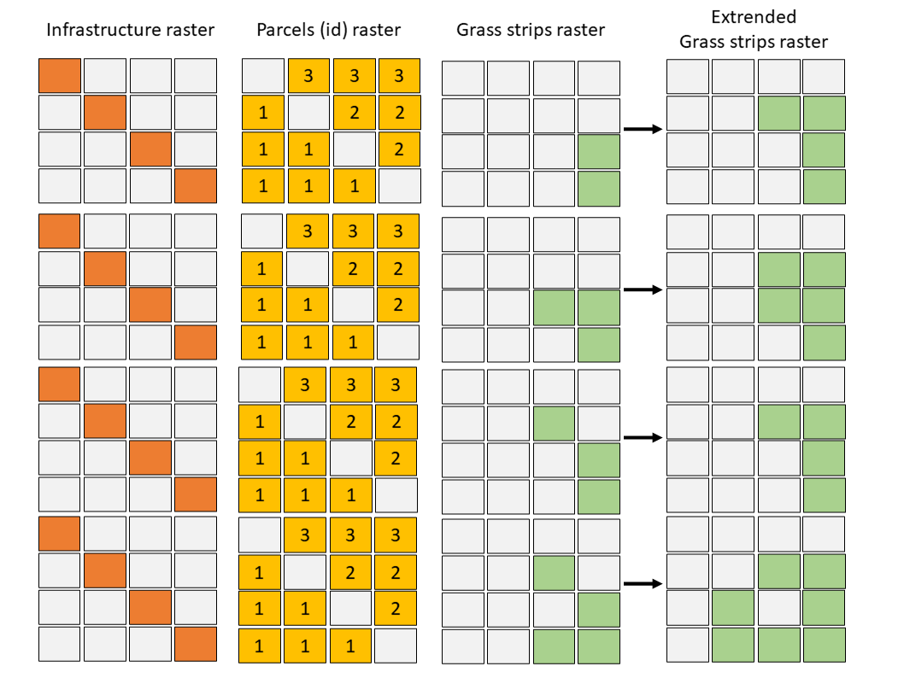

pywatemsedem package¶
Subpackages¶
- pywatemsedem.geo package
- Submodules
- pywatemsedem.geo.factory module
- pywatemsedem.geo.rasterproperties module
RasterPropertiesRasterProperties.boundsRasterProperties.driverRasterProperties.epsgRasterProperties.from_gdal()RasterProperties.from_rasterio()RasterProperties.gdal_profileRasterProperties.ncolsRasterProperties.nodataRasterProperties.nrowsRasterProperties.rasterio_profileRasterProperties.resolutionRasterProperties.xcoordRasterProperties.ycoord
get_bounds_from_vct()synchronize_bounds()
- pywatemsedem.geo.rasters module
- pywatemsedem.geo.utils module
add_length_lines_to_polygons()any_equal_element_in_vector()calculate_sum_rst()check_cuboid_condition()check_raster_properties_raster_with_template()check_rst_dimensions()check_single_polygon()check_spatial_resolution_rst()clean_up_tempfiles()clip_rst()clip_vct()clip_vct_with_bounds()compute_statistics_rasters_per_polygon_vector()copy_rst()copy_vct()create_hillshade()create_spatial_index()define_extent_from_vct()delete_rst()estimate_width_of_polygon()execute_saga()execute_subprocess()generate_vct_mask_from_raster_mask()get_extent_vct()get_feature_count()get_fields_vct()get_geometry_type()get_mask_template()get_rstparams()grid_difference()grid_statistics()idrisi_to_tiff()lines_to_direction()lines_to_points()lines_to_raster()load_discharge_file()load_raster()mask_array_with_val()mask_raster()merge_lst_vct()merge_lst_vct_saga()merge_rasters()nearly_identical()polygons_to_raster()process_mask_shape_from_raster_file()raster_array_to_pandas_dataframe()raster_dataframe_to_arr()raster_to_polygon()rasterprofile_to_rstparams()read_dtype_raster()read_rasterio_profile()read_rst_params()reclass_rst()rst_to_vct_points()rstparams_to_rasterprofile()saga_intersection()set_dtype_arr_rst()set_no_data_arr()set_no_data_rst()tiff_to_esri_shp()tiff_to_geopandas_df()tiff_to_idrisi()valid_gdal_type()valid_mask()vct_to_rst_field()vct_to_rst_value()write_area_ha_to_vct()write_arr_as_rst()
- pywatemsedem.geo.valid module
- pywatemsedem.geo.vectors module
- Module contents
- pywatemsedem.io package
- Submodules
- pywatemsedem.io.folders module
CatchmentFolderScenarioFolderscheck_and_create_catchment_folder()check_and_create_cnwsinput_folder()check_and_create_cnwsoutput_folder()check_and_create_folder()check_and_create_home_folder()check_and_create_postprocessing_folder()check_and_create_rst_folder()check_and_create_scenario_folder()check_and_create_vct_folder()check_and_create_vctyears_folder()check_and_create_years_folder()throw_error_if_folder_empty()
- pywatemsedem.io.ini module
- pywatemsedem.io.modelinput module
- pywatemsedem.io.modeloutput module
Modeloutputcheck_segment_edges()compute_cumulative_loads_in_sinks()compute_efficiency_buffers()condition_routing_dataframe_on_extent()create_deposition_raster()create_erosion_raster()create_id_raster_for_highest_value_arr()define_subcatchments_saga()get_prckrt_statistics()identify_individual_priority_catchments()identify_rank_sediment_loads()load_total_sediment_file()make_routing_vct_saga()map_rank_sediment_loads()open_txt_routing_file()prepare_make_routing_vct_saga()remove_river_routing()run_saga_make_routing_shp_cmd()verify_highest_load_with_threshold()
- pywatemsedem.io.plots module
- pywatemsedem.io.valid module
- Module contents
Submodules¶
pywatemsedem.buffers module¶
- pywatemsedem.buffers.filter_outlets_in_arr_extension_id(gdf, arr, arr_dtm, arr_outlet=None)[source]¶
Map buffer outlet on extension id raster
This function filters outlet id’s to single outlet id, for every buffer. The function returns an array with single entries for every buffer id and multiple entries for every buffer extension id.
The algorithm takes a single pixel that
corresponds to the pixel defined in arr_outlet (use-defined).
OR
corresponds to the minimum dtm value in the extension of the buffer.
- Parameters:
gdf (geopandas.GeoDataFrame) – Holding id’s (column: ‘buf_id’ (int)), all id’s should be present in arr and vice versa.
arr (numpy.ndarray) – Array with buffer outlet (<16 385) and extension id’s (16 385>=). This array can hold multiple entries for buffer outlet. All outlet id’s should be present in gdf
arr_dtm (numpy.ndarray) – DTM array, should have dimension of arr
arr_outlet (numpy.ndarray) – Holds number of forced outlets, should have dimension of arr.
- Returns:
arr – Array with single entries for every buffer id and multiple entries for every buffer extension id.
- Return type:
- pywatemsedem.buffers.process_buffer_outlets(gdf_outlets, gdf_buffer)[source]¶
Map user-defined outlets to buffers.
This function maps outlets to buffer id’s based on the overlap between the outlet definition and the buffer polygon definition.
#TODO: write test function
- Parameters:
gdf_outlets (gpd.GeoDataFrame) – GeoDataFrame with a geometry definition.
gdf_buffer (gpd.GeoDataFrame) – Holding buffer id’s and geometry
- Returns:
gdf_outlets – Updated outlets with buf id assigedn
- Return type:
gpd.GeoDataFrame
- pywatemsedem.buffers.process_buffers_in_river(gdf, arr, arr_river, nodata)[source]¶
This functions filters buffers from the buffer raster that overlap with a river
- Parameters:
gdf (geopandas.GeoDataFrame) – Geopandas representation of arr, in buf_exid.
arr (numpy.ndarray) – Array with buffer outlet (<16 385) and extension id’s (16 385>=). This array can hold multiple entries for buffer outlet. All outlet id’s should be present in gdf.
arr_river (numpy.ndarray) – River raster, should be -1 and nodata
nodata (float) – Nodata value in arr_river.
- Returns:
gdf (geopandas.GeoDataFrame) – Filtered
arr (numpy.ndarray) – Filtered
pywatemsedem.calibrate module¶
- class pywatemsedem.calibrate.Calibration(ktc_low_min: float, ktc_low_max: float, ktc_high_min: float, ktc_high_max: float, steps: int)[source]¶
Bases:
objectData class for calibration parameters.
Data class used to store all commonly used variables for a calibration run.
- Parameters:
- pywatemsedem.calibrate.add_outlier_names_to_calibration_plot(df, ax, kind, lq=50, uq=150)[source]¶
Add outlier id or catchment name to outliers in evaluation plots.
Outlier names are plotted when the quotient of observed to predicted is lower or higher than respectively the lower or upper quotient (lq and uq). For description of plots see
pywatemsedem.calibrate.plot_regression().- Parameters:
df (pandas.DataFrame) –
Results of one set of ktc values with columns:
O_sy (float): observed (specific) sediment yield (ton).
P_sy (float): predicted (specific) sediment yield (ton/ha).
ax (matplotlib.pyplot.axis.)
kind (str) – “ssy” or “sy”.
lq (str) – Lower quotient limit.
uq (str) – Upper quotient limit.
- Returns:
ax
- Return type:
matplotlib.pyplot.axis.
- pywatemsedem.calibrate.calculate_model_efficiency(df_calibration_data, df_calibration_results)[source]¶
Calculates the model efficiency (ME) for a calibration data set.
The model efficiency calculations are for now based on the Nash-Sutcliff efficiency criterion (NSE).
- Parameters:
df_calibration_data (pandas.DataFrame) –
DataFrame with all necessary data for a calibration. It contains at least the following columns:
name (str): the name of a catchment.
sy (float): the sediment yield (ton).
area (float): the area of the catchment (ha).
ssy (float): the specific sediment yield (ton/ha).
df_calibration_results (pandas.DataFrame) – DataFrame with all modelled sediment yields for different combinations of ktc-values and different catchments. For the definition of the dataframe, see
pywatemsedem.calibrate.merge_calibration_results().
- Returns:
df_me – DataFrame with calculated model efficiencies for all different combinations of ktc-values. Contains following columns:
ktc_low (float): ktc low value used in the model run.
ktc_high (float): ktc high value used in the model run.
ME sy (float): model efficiency computed based on sediment yield.
ME ssy (float): model efficiency computed based on specific sediment yield.
- Return type:
Notes
Model efficiencies are computed based on observed and simulated yearly totals.
- pywatemsedem.calibrate.calculate_ratio_ktc(df_ktc)[source]¶
Calculates the ratio between ktc low and ktc high
- Parameters:
df_ktc (pandas.DataFrame) –
DataFrame with different comibinations of ktc-values. The DataFrame contains at least following columns:
ktc_low (float): ktc low value used in the model run.
ktc_high (float): ktc high value used in the model run.
- Returns:
df_ktc – Identical DataFrame as the input DataFrame, but with an extra column: ratio_ktc (float).
- Return type:
- pywatemsedem.calibrate.calculate_regressions(df_calibration_results, calibration)[source]¶
Compute regression for plots
- Parameters:
df_calibration_results (pandas.DataFrame) – DataFrame with all modelled sediment yields for different combinations of ktc-values and different catchments. For the definition of the dataframe, see
pywatemsedem.calibrate.merge_calibration_results().calibration (pywatemsedem.core.calibrate.Calibration) – See
pywatemsedem.calibrate.Calibration.
- Returns:
df_regressions – DataFrame with the regression parameters for all combinations of ktc-values. The DataFrame contains following columns:
ktc_low (float): ktc low value used in the model run.
ktc_high (float): ktc high value used in the model run.
R2 sy (float): see
pywatemsedem.calibrate.linear_regression_evaluation_calibration().R2 ssy (float): see
pywatemsedem.calibrate.linear_regression_evaluation_calibration().rico_sy (float): see
pywatemsedem.calibrate.linear_regression_evaluation_calibration().rico_ssy (float): see
pywatemsedem.calibrate.linear_regression_evaluation_calibration().
- Return type:
- pywatemsedem.calibrate.check_endpoint_throughput_coefficient(endpoint_coefficient: float)[source]¶
Check the endpoint (sewers and ditches) throughput coefficient used in
pywatemsedem.calibrate.process_calibrationrun_output().Raise error if the throughput coefficient is not within the defined ranges.
- Parameters:
endpoint_coefficient (float) – Percentage of sediment load to captured in the endpoints (sewers and ditches) to consider for the computed predicted sediment load (see also column non river in scenario_x/modeloutput/calibration.txt).
- pywatemsedem.calibrate.compute_denomitor_nash_sutcliffe(df_calibration_data, variable, squared_error)[source]¶
Compute the denomitor for the Nash-Sutcliffe model efficiency.
You can make use of squared or absolute errors to compute the denominator.
- Parameters:
df_calibration_data (pandas.DataFrame) – See
pywatemsedem.calibrate.calculate_model_efficiency().variable (str, default 'sy') – Name of output variable ‘sy’ or ‘ssy’.
squared_error (bool) – Make use of squared errors to compute denominator (True/False).
- Returns:
denominator – Denominator of the Nash-Sutcliffe criterion.
- Return type:
- pywatemsedem.calibrate.compute_model_errors_sy(df_cal, variable)[source]¶
Compute model errors based on simulations and observations.
Errors: observation-prediction
Absolute errors: |observation-prediction|
Squared errors: (observation-prediction)$^2$
- Parameters:
df_cal (pandas.DataFrame) – Definition, see
pywatemsedem.calibrate.process_calibrationrun_output().variable (str) – Name of output variable ‘sy’ or ‘ssy’.
- Returns:
df_cal – Updated with errors between simulation and observations.
- Return type:
- pywatemsedem.calibrate.compute_nash_sutcliffe(df_calibration_results, denominator, variable, squared_error=True)[source]¶
Compute Nash-Sutcliffe model efficiency for calibration results of WaTEM/SEDEM for a variable
- Parameters:
df_calibration_results (pandas.DataFrame) – See
pywatemsedem.calibrate.calculate_model_efficiency().denominator (float) – See
pywatemsedem.calibrate.compute_denomitor_nash_sutcliffe().variable (str) – Name of output variable ‘sy’ or ‘ssy’.
squared_error (bool, default True) – Make use of squared errors to compute Nash-Sutcliffe (True/False).
- Returns:
df_me – DataFrame with calculated model efficiencies for all different combinations of ktc-values. Contains following columns:
ktc_low (float): ktc low value used in the model run.
ktc_high (float): ktc high value used in the model run.
NS sy (float): Nash-Sutcliffe model efficiency computed based on sediment yield.
NS ssy (float): Nash-Sutcliffe model efficiency computed based on specific sediment yield.
- Return type:
- pywatemsedem.calibrate.linear_regression_evaluation_calibration(arr_observed, arr_predicted)[source]¶
Compute linear regression between observed and predicted values.
- Parameters:
arr_observed (np.ndarray or pandas.Series) – Observed (specific) sediment yield.
arr_predicted (np.ndarray or pandas.Series) – Predicted (specific) sediment yield
- Returns:
p_reg (float) – See
sklearn.linear_model.LinearRegressionr2 (float) – See
sklearn.metrics.r2_score()rico (float) – First order regression coefficient. See also
sklearn.linear_model.LinearRegression
- pywatemsedem.calibrate.merge_calibration_results(lst_df_calibration, caldata)[source]¶
Check if dimension of calibration space are equal to the one defined in the caldata instance (see
pywatemsedem.calibrate.Calibration)Merges a list of pandas.DataFrame with processed calibration model output
- Parameters:
lst_df_calibration (list) – Every item in the list is a pandas.DataFrame. For the definition of the dataframe, see
pywatemsedem.calibrate.process_calibrationrun_output().caldata (pywatemsedem.core.calibrate.Calibration) – See
pywatemsedem.calibrate.Calibration
- Returns:
df_calibration_results – DataFrame with all modelled sediment yields for different combinations of ktc-values. The DataFrame contains following columns:
name (string): name of the catchment.
O_sy (float): observed sediment yield.
O_ssy (float): observed specific sediment yield.
P_sy (float): predicted sediment yield.
P_ssy (float): predicted specific sediment yield.
(O_sy-P_sy)² (float): squared difference between observed and predicted sy.
(O_ssy-P_ssy)² (float): squared difference between observed and predicted ssy.
ktc_low (float): ktc low value used in the model run.
ktc_high (float): ktc high value used in the model run.
- Return type:
- pywatemsedem.calibrate.plot_model_efficiency(df_me, caldata, sy=True, contours=[-0.15, 0, 0.15, 0.3, 0.45, 0.6, 0.75])[source]¶
This function plots the calculated model efficiency as a function of ktc-low and ktc-high.
- Parameters:
df_me (pandas.DataFrame) – Dataframe with the calculated model efficiencies for all combinations of ktc-values. See
pywatemsedem.calibrate.calculate_modelefficiency()for the defintion of the dataframe.caldata (pywatemsedem.core.calibrate.Calibration) – See
pywatemsedem.calibrate.Calibration.sy (bool, default True) – Plot the sediment yield (sy=True) or the specific sediment yield (sy=False).
contours (list, default [-0.15, 0, 0.15, 0.3, 0.45, 0.6, 0.75]) – List with values for contour lines.
- Returns:
fig (matplotlib.pyplot.figure)
ax (matplotlib.pyplot.axes)
- pywatemsedem.calibrate.plot_regression(df, ktc_low, ktc_high, kind='sy', label_outliers=False, labels=False)[source]¶
Generate regression plot for calibration
- Parameters:
df (pandas.DataFrame) – See
pywatemsedem.calibrate.calculate_model_efficiency().ktc_low (float) – Low transport capacity coefficient.
ktc_high (float) – High transport capacity coefficient.
kind (str) – “ssy” or “sy”.
label_outliers (bool, default False) – Flag if you want to label outliers in regression plot.
labels (bool, default False) – Flag if you want to label all datapoints in regression plot.
- Returns:
fig (matplotlib.pyplot.figure)
ax1 (matplotlib.pyplot.figure)
- pywatemsedem.calibrate.process_calibrationrun_output(txt_calibration, observed_sy, catchment_name, catchment_area, endpoint_coefficient=0.0)[source]¶
Processes the output-file of a calibration run for a given catchment
This function reads the calibration output file for a given catchement and calculates for every combination of ktc values the predicted specific sediment yield (P ssy) and calculates the squared difference between the observed and predicted (specific) sediment yield.
- Parameters:
txt_calibration (str or pathlib.Path) – Path to the calibration-output file of a WaTEM/SEDEM model run, see here.
observed_sy (float) – The observed sediment yield for the catchment (in ton).
catchment_name (str) – The name of the catchment.
catchment_area (float) – The area of the catchment in ha.
endpoint_coefficient (float, default 0.) – This coefficient determines the percentual amount of the sediment load that is captured in endpoints (sewers and ditches). In percentage (% - e.g. 80%). See also
pywatemsedem.calibrate.check_endpoint_throughput_coefficient().
- Returns:
df_cal – DataFrame with all modelled sediment yields for different combinations of ktc-values. The DataFrame contains following columns:
name (string): name of the catchment.
O_sy (float): observed sediment yield (in ton).
O_ssy (float): observed specific sediment yield (ton/m$^2$).
P_sy (float): predicted sediment yield (in ton).
P_ssy (float): predicted specific sediment yield (ton/m$^2$).
(O_sy-P_sy) (float): difference between observed and predicted sy.
|O_sy-P_sy| (float): absolute difference between observed and predicted sy.
(O_sy-P_sy)² (float): squared difference between observed and predicted sy.
(O_ssy-P_ssy) (float): difference between observed and predicted ssy.
|O_ssy-P_ssy| (float): absolute difference between observed and predicted ssy.
(O_ssy-P_ssy)² (float): squared difference between observed and predicted ssy.
ktc_low (float): ktc low value used in the model run.
ktc_high (float): ktc high value used in the model run.
- Return type:
pywatemsedem.catchment module¶
- class pywatemsedem.catchment.Catchment(name, vct_catchment, rst_dtm, resolution, epsg_code, nodata, results_folder=None)[source]¶
Bases:
FactoryConstruct a new Catchment instance
The catchment class holds all static information for a catchment. The class considers all data of which the content is user-option-independent (i.e.
pywatemsedem.userchoices.UserChoices.Following properties can be set:
kfactor: K-factor raster.
landuse: base landuse raster.
river: river line vector.
water: water polygon vector
vct_infrastructure_buildings: polygon vector of infrastructure (typically buildings).
vct_infrastructure_roads: roads line vector (with optional attribute ‘paved’).
cnsoil: cn soil raster (CN-only).
Notes
Initialisation of mask, vector and raster handling is done with the help of the pywatemsedem factory class, see
pywatemsedem.geo.factory.Factory.- property adjacent_edges¶
Getter dataframe adjacent edges/segment property
This property is generated by assigning a river line vector to the catchment class. Every row indicates a connection between two segments: segment from (column 1) flows into segment to (column 2). See here
- Returns:
With columns, flow
from (int): from segment
to (int): to segment
- Return type:
- property catchment_area¶
Total area of the catchment
- Returns:
float
- Return type:
\(m^2\)
- create_folder_structure()[source]¶
Creates a fixed folder structure for the model data
The folder layout will have the following directory structure:
├── homefolder │ └── bekken folder / catchment folder │ ├── Rsts │ ├── Shps
- static create_height_contours(rst_input, vct_output)[source]¶
Create height contours line vector based on a DTM raster
- Parameters:
rst_input (pathlib.Path) – Input DTM raster
vct_output (pathlib.Path) – Output height contour line vector
- property dtm¶
Getter dtm raster
- Returns:
Float64 raster with DTM height values.
- Return type:
- property hydrological_soil_group¶
CN hydrological soil group raster
This raster (int) holds the four categories (see [2]):
A (value 1): Soils in this group have low runoff potential when thoroughly wet.
B (value 2): Soils in this group have moderately low runoff potential when thoroughly wet.
C (value 3): Soils in this group have moderately high runoff potential when thoroughly wet.
D (value 4): Soils in this group have high runoff potential when thoroughly wet.
- Return type:
- property infrastructure¶
Get infrastucture raster
Get rasterized polygon and line vectors. The procedure adds the line data (roads) to the polygon data (buildings). As such buildings are considered as the base map.
- Returns:
Raster containing following values:
-2: paved
-7: paved
- Return type:
Notes
Note that current module allows to either define a roads (1), buildings (2) or roads and buildings (3). If no roads or buildings are defined, an error is thrown.
- property infrastructure_buildings¶
Getter rasterized infrastructure polygon vector
- Returns:
Raster containing following values:
-2: paved
-9999: nodata
- Return type:
- property infrastructure_roads¶
Getter rasterized infrastructure polygon vector
- Returns:
Raster containing following values:
-2: paved
-7: paved
-9999: nodata
- Return type:
- property kfactor¶
Getter K-factor raster
The K-factor raster is a raster holding K-values for every pixel (\(\frac{ton.h}{MJ.mm}\)).
- Return type:
- property landuse¶
Getter background land-use raster
- Returns:
The raster can following values:
nodata: nodata
-5: open water
-4: grass
-3: forest
-2: infrastructure
10: agricultural fields
- Return type:
- property pfactor¶
P-factor raster
The P-factor raster holds values between 0 and 1, and is the factor in the RUSLE equation which takes into account erosion control. In pywatemsedem, this factor is always set to 1, as erosion source-oriented control measures are accounted for in the C-factor.
- Return type:
- property river¶
Getter river raster
- Returns:
Raster containing following values:
-1: river
0: no river
-9999: nodata
- Return type:
- property river_segment_length¶
Total length of all river segments in the catchment
- Return type:
float, meter
- property routing¶
Getter river routing raster
See here
- Returns:
Raster containing values from 0 to 8:
0: do not route further
1: route to upper pixel
2: route to upper right pixel
3: route to right pixel
4: route to lower right pixel
5: route to lower pixel
6: route to lower left pixel
7: route to left pixel
8: route to upper left pixel
-9999: nodata
- Return type:
- property segments¶
Getter river segments raster
See here
- Returns:
Raster containing following values:
>0: segment_id
-9999: nodata
- Return type:
Notes
The number of segments is limited to int16.
- static topologize_river(vct_input, vct_output, rst_mask, tolerance=None)[source]¶
Prepare topology of the river segments with SAGA-GIS
- Parameters:
vct_input (str or pathlib.Path) – Line input vector
vct_output (str of pathlib.Path) – Topologized line output vector
rst_mask (str or pathlib.Path) – Mask raster (used for mapping)
tolerance (float) – If not None, the
TOLERANCEcommand line argument of the saga topology command is given this value.
- Returns:
adjacent_edges (pandas.DataFrame) – See
pywatemsedem.catchment.Catchment.adjacent_edges()and here.up_edges (pandas.DataFrame) – See
pywatemsedem.catchment.Catchment.up_edges()and here.
- property up_edges¶
Getter dataframe upstream edges/segment property
This property is generated by assigning a river line vector to the catchment class. See here
- Returns:
With columns
edge (int): segment id
upstream edge (int): segment id of one of the upstream segment of the edge.
proportion (float): proportion of upstream edge flowing into edge. Lower than 1 when upstream edge flows into two edges.
- Return type:
- property vct_infrastructure_buildings¶
Getter infrastructure polygon vector
- Returns:
Polygon vector with attribute “paved”
- Return type:
- property vct_infrastructure_roads¶
Getter infrastructure line vector
- property vct_river¶
Assign river-line vector
The river vector should be a line-vector file. No specific attributes should be defined.
- Parameters:
vector_input (Pathlib.Path, str or geopandas.GeoDataFrame) – Line vector file.
- property vct_tubed_river¶
Assign underground river-line vector
The river tubed vector should be a line-vector file. No specific attributes should be defined.
- Parameters:
vector_input (Pathlib.Path, str or geopandas.GeoDataFrame) – Line vector file.
- property vct_water¶
Getter water polygon vector
- Returns:
Polygon vector with attribute “value”
- Return type:
- property water¶
Getter water polygon vector
- Returns:
Raster containing following values:
-5: open water
-9999: nodata
- Return type:
- pywatemsedem.catchment.valid_vct_infra_line(func)[source]¶
Check if infrastructure vectors are defined
pywatemsedem.cfactor module¶
- pywatemsedem.cfactor.create_cfactor_cnws(rivers, infrastructure, landuse, mask, sfolder, vct_parcels=None, vct_grass_strips=None, cfactor_aggriculture=0.37, use_source_oriented_measures=False)[source]¶
Creates the C-factor map for a given year and season.
Sets the scenario.Ckaarten[year][season] attribute
- Parameters:
rivers (numpy.ndarray) – River raster, all rivers must have a no-nodata or no-0-value.
infrastructure (numpy.ndarray) – Infrastructure raster, all infrastructure pixels must have a no-nodata or no-0 value.
landuse (numpy.ndarray) – Landuse raster. This raster should be formatted according to the composite WaTEM/SEDEM parcels raster (see here).
mask (#TODO: check how to simplify this)
sfolder (pathlib.Path) – Results necessary for saving mask
vct_parcels (geopandas.GeoDataFrame) – Dataframe holding C-factor values, columns: - C_factor (float)
vct_grass_strips (geopandas.GeoDataFrame, default None) – Dataframe holding C-factor values, columns: - C_factor (float)
cfactor_aggriculture (numpy.ndarray , default 0.37) – Default C-factor value for left-over pixels
use_source_oriented_measures (bool) – True / False. In case True, vct_parcels should contain the column ‘C_reduct’.
Notes
C-reduction based on source-oriented measures are only applied at the level of parcel polygons (see
pywatemsedem.cfactor.reduce_cfactor_with_source_oriented_measures()).
- pywatemsedem.cfactor.reduce_cfactor_with_source_oriented_measures(c_factor, c_reduction, use_source_oriented_measures)[source]¶
Reduce the C-factor with the amount defined in ‘C_reduction’ for every element in the vector. This formule is used to implement impact of source oriented measures on C-factor.
Formula:
- Parameters:
c_factor (numpy.ndarray) – 1D-array of C-factor values, vary between 0 and 1.
c_reduction (numpy.ndarray) – 1D array of reduction coefficients, vary between 0 and 1.
use_source_oriented_measures (bool) – True / False. In case True, vct_parcels should contain the column ‘C_reduction’.
- Returns:
c_factor – Reduced C-factors.
- Return type:
pywatemsedem.cn module¶
- pywatemsedem.cn.process_cn_raster(hsg, parcels, season, composite_landuse, parcels_ids, cn_table, nodata=-9999)[source]¶
Creates the CN-map for a given year and season.
Current implementation executes three steps:
Generate a CNmaxID based on CN type id (1-11, associated to crop), contour plowing measures (0/1/2), hydrological conditions ({0,1->3}, {unknown, poor to good}), contour_id (0/1).
Couple CN-values based in CNmaxID and season for all parcels (based on parcel id)
Coupled CN-values 99, 99 and 1 to land-uses river (-1) , infrastructure (-2) and water (-5).
- Parameters:
hsg (numpy.ndarray) – Raster that holds values from 1 to 4 according to hydrological soil group (A, B, C and D), see [1] and [2], for more info, see documentation in function :attr: pywatemsedem.catchment.Catchment.hydrological_soil_group`.
parcels (geopandas.GeoDataFrame) –
Parcels polygon data with columns:
NR (int): unique id, should be the same as in parcels_ids (i.e. parcels_ids is a rasterized version of the parcels dataframe).
”CN_type_id” (int): crop specific CN id (1-11).
”HydroCond” (str): Either “Poor”, “Fair” or “Good”.
Optional columns:
gewasrest (int): are the ‘gewasresten’ yes (1) or no (0).
contour (int): is contour plowing applied yes (1) or no (0).
ntkerende (int): is there non-plowing tillage yes (1) or no (0).
verslemp (int): has silting occurred yes (1) or no (0).
season (str) – Either “fall”, “spring”, “summer”, “winter”
composite_landuse (numpy.ndarray) – A composite land-use raster. Typically, it defines the landuse from non-agricultural pixels.
parcels_ids (numpy.ndarray) – A parcels id raster, holding unique id’s per parcel.
cn_table (pandas.DataFrame) – Table holding CNmax values per hydrological soil group and per CNmaxID.
nodata (float, default -9999) – Nodata value
- Returns:
arr_cn – Raster with values between 1 (low CN, low run-off) and 100 (high CN, high run-off)
- Return type:
Notes
The CNtype_id is crop/cover-specific. Note that for general land-uses reported in the base landuse map (no crop info present), CN is set equal to a predefined CNmax:
forest: CN = CNmax is based on CNmaxID 9030
grassland: CN = CNmax is based on CNmaxID 5020
grass: CN = CNmax is based on CNmaxID 6000
CN is set equal to 99 for infrastructure, rivers and pools (no infiltration)
The contour_id is computed by:
contour_id = 1 if CNtype_id in {2, 3, 4} and contour = 0
contour_id = 2 if CNtype_id in {2, 3, 4} and contour = 1
contour_id = 0 else
The HydroCond_id is computed by:
HydroCond_id = 1 if HydroCond is equal to ‘Poor’.
HydroCond_id = 2 if HydroCond is equal to ‘Fair’.
HydroCond_id = 3 if HydroCond is equal to ‘Good’.
HydroCond_id = 0 if HydroCond is equal to NULL.
Gewasrest_id is equal to gewasrest (1 or 0)
When the CNtype_id is equal to NULL, CNtype_id is set to 4, HydroCond_id to 1 and contour_id to 1.
References
pywatemsedem.compare_scenario module¶
- class pywatemsedem.compare_scenario.DeltaScenario(pp1, pp2, resmap=None)[source]¶
Bases:
objectConstruct a DeltaScenario instance with two instances of PostProcess
- Parameters:
pp1 (pywatemsedem.postproces.PostProcess) – First PostProcess instance of scenario used for the comparison.
pp2 (pywatemsedem.postproces.PostProcess) – Second PostProcess instance of scenario used for the comparison.
resmap – Folder path used to write results to
Examples
- Define inputs
>>> pp1 = PostProcess(molenbeek, 1, 2019, 20, 31370) >>> pp2 = PostProcess(molenbeek, 2, 2019, 20, 31370)
- Run
>>> delta_scenario = DeltaScenario(pp1,pp2) >>> delta_scenario.comparison_total_sediment_file() >>> ...
- check_input(pp)[source]¶
Check the type of input given to DeltaScenario class
- Parameters:
pp (pywatemsedem.postproces.PostProcess) – A PostProcess instance of scenario used for the comparison.
- comparison_total_sediment_file()[source]¶
Compare the values in the total sediments file
- Returns:
df – Holding results of summary values for run for scenario 1 and 2, and the difference between those values.
sc1: values for general statistics scenario 1
sc2: values for general statistics scenario 2
difference: difference between statistics scenario 1 and 2
- Return type:
pywatemsedem.defaults module¶
- pywatemsedem.defaults.SAGA_FLAGS = '-f=q'¶
no progress report
pywatemsedem.errors module¶
- exception pywatemsedem.errors.PywatemsedemRasterValueError[source]¶
Bases:
ExceptionRaise error when input data attribute values are not conform required attributes values
- exception pywatemsedem.errors.PywatemsedemVectorAttributeError[source]¶
Bases:
ExceptionRaise error when input data are not conform the required pywatemsedem attributes.
- exception pywatemsedem.errors.PywatemsedemVectorAttributeValueError[source]¶
Bases:
ExceptionRaise error when input data attribute values are not conform required attributes values
- pywatemsedem.errors.attribute_continuous_value_error(source, tag, attribute, lower=None, upper=None)[source]¶
Value error for continuous attributes in input vector
Raises error when an attribute of an input vector contains out-of-bound values.
- pywatemsedem.errors.attribute_discrete_value_error(source, tag, attribute, allowed_values, classes=None)[source]¶
Value error for discrete attributes in input vector
Raises error when an attribute of an input vector contains incorrect discrete values.
- Parameters:
source (geopandas.GeoDataFrame) – Input vector.
tag (str) – Internal naming.
attribute (str) – Column name
allowed_values (set of int and/or float) – Allowed values
classes (set of string, default None) – Name of classes of values, if None: not considered.
- pywatemsedem.errors.missing_attribute_error_in_vct(source, tag, req_attributes)[source]¶
Missing attribute error in vectors
Raises error when not all required attributes/columns are present in input vector.
- Parameters:
source (geopandas.GeoDataFrame) – Input vector.
tag (str) – Internal naming.
req_attributes (set) – Required attributes in input source.
- pywatemsedem.errors.raster_discrete_value_error(raster_array, tag, allowed_values, classes=None)[source]¶
Value error for discrete attributes in input raster
Raises error when an attribute of an input raster contains incorrect discrete values.
- Parameters:
raster_array (numpy.ndarray) – Input raster.
tag (str) – Internal naming.
allowed_values (list) – Allowed values
classes (list) – Name of classes of values, if None: not considered.
pywatemsedem.grasstrips module¶
pywatemsedem grass strips processing functions
- pywatemsedem.grasstrips.add_boundary_rows_cols_to_arr(arr)[source]¶
Add boundary rows and columns to an array, set values to zero.
- Parameters:
arr (numpy.ndarray)
- Returns:
With two rows added to the top and bottom, and two columns added to the left and right
- Return type:
- pywatemsedem.grasstrips.compute_number_of_non_zero_neighbours(arr, nodata=None, mode=1)[source]¶
Compute number of non-zero neighbour (eight) elemnts for every array element.
This algorithm computes how many neighbours of a pixel are not equal to zero (and not equal to nodata.)
- Parameters:
arr (numpy.ndarray) – Input array with valid values: (nodata, 0, >0) Nodata values are considered as 0-values. >0 values are considerd as 1-values
nodata (float, default None) – Values to ignore, if equal to None this is not considered.
mode (int) –
Mode of expansion:
1: Consider ordinal + cardinal direction. 2: Cardinal direction. 3: Ordinal direction.
- Returns:
arr_out – Array with for each element the number of non-zero neighbours.
- Return type:
Notes
Nodata values are not considered!
Boundaries are set to zero.
Grass strips within trigger pixels are not considered.
- pywatemsedem.grasstrips.core_expand_grass_strips_with_triggers(arr_grass_strips, arr_grass_strips_neighbours, arr_triggers_neighbours, arr_parcels=None, nodata=None)[source]¶
Grass strip expansion algorithm based on raster inputs.
The grass strips expansion algorithm executes following steps:
Expand the grass strips with one pixel. This implies that adjacent (ordinal and/or cardinal directions, depending on mode, see
pywatemsedem.grasstrips.compute_number_of_non_zero_neighbours()) pixels to a grass strip pixel are classified as grass strip pixels.The added grass strip pixels can only be retained if following rules are satisfied:
The added grass strip pixels is in the direct vicinity of (one of 8 neighbours) a trigger pixel (river, infrastructure pixel).
(optional) The added grass strip pixels can only be withheld when it belongs to a parcel to which the original grass strip was part of.
- Parameters:
arr_grass_strips (numpy.ndarray) – Array with unique id’s per grass strips
arr_grass_strips_neighbours – See
pywatemsedem.grasstrips.compute_number_of_non_zero_neighbours()applied on grass strips array.arr_triggers_neighbours (nump.ndarray) – See
pywatemsedem.grasstrips.compute_number_of_non_zero_neighbours()applied on triggers array.arr_parcels (nump.ndarray, default None) – Parcel ids raster. Pixel belonging to one parcel share the same unique id. The value zero indicates that no parcel is present. If None, the expansion is not limited to the boundaries of a parcel.
nodata (float, default None) – Nodata value of all rasters
- Returns:
arr_grass_strips – Grass strips array with grass strips expanded at the trigger boundary edge cases.
- Return type:
Notes
This algorithm is not able to make a distinction between two separate grass strip in one parcel.
For the expansion of the grass strips, the source grass pixels overlapping with the triggers are not considered. This implies that if a specific gras strip completely overlaps with triggers, no expansion will be done.
- pywatemsedem.grasstrips.create_grass_strips_from_line_string(line_string, polygons=None, width=20, width_polygon=20)[source]¶
Add bank grass strips
Adds bank grass strips with a standard length of 20m, along input LineStrings. If required, clip by polygons.
- Parameters:
line_string (geopandas.GeoDataFrame) – Geopandas dataframe with LineString
polygons (geopandas.GeoDataFrame, default None) – Geopandas dataframe with Polygon
width (int, optional, default 20) – Width (m) of the bank grass strip stored in the attribute table.
width_polygon (int, optional, default 20) – width (m) of the bank grass strip polygon
- Returns:
grass_strips –
width (float): width of grass strips
scale_ktc (float): scale ktc, see
pywatemsedem.grassttips.scale_ktc_with_grass_strip_width()
- Return type:
Notes
The width is the estimated true width of the grass strip, whereas the width polygon the used width is for mapping the shape to a raster. Typically, this width polygon is set to the resolution to ensure all LineString-surrounding pixels are mapped as grass strips. Note that the width polygon is not the estimated true width, it is a mapping (shape => raster) width.
- pywatemsedem.grasstrips.create_grassstrips_cnws(arr_grass_strips_ids, arr_river, arr_infr, profile, arr_parcels=None, expand_grass_strips=False)[source]¶
Create grass strips raster for WaTEM/SEDEM
This function create the grass strips raster that is used as input creating the composite WaTEM/SEDEM parcels raster (see here). The output of this function provides a raster with -6-values for grass strip pixels.
- Parameters:
arr_grass_id (numpy.ndarray) – Grass strips id’s-raster. Pixel belonging to one grass strip share the same unique id. Other values should be have nodata-value described in the parameter profile.
arr_river (numpy.ndarray) – River raster. River pixels should have the value differing from 0 or nodata (defined in profile).
arr_infr (numpy.ndarray) – Infrastructure raster. Infrastructure pixels should have the value differing from 0 or nodata (defined in profile).
arr_parcels (numpy.ndarray, default None) – Parcel ids raster. Pixel belonging to one parcel share the same unique id. The value zero indicates that no parcel is present. If None, the expansion is not limited to the boundaries of a parcel.
profile (dict) – Rasterio profile, see
pywatemsedem.geo.rasterproperties.RasterProperties.rasterio_profile. All the input rasters must have the same nodata-value, defined in profile.expand_grass_strips (bool, default False) –
- Use expand grass strips algorithm with rivers as triggers, see
- Returns:
arr_grass_strips_ids (numpy.ndarray) – Expanded grass strips id’s-raster.
arr_grass (numpy.ndarray) –
- -6-value-raster of grass strips id’s-raster, formatted according to composite
WaTEM/SEDEM parcels raster (see here).
Notes
All the input rasters must have the same nodata-value, defined in profile.
- pywatemsedem.grasstrips.estimate_ste(simulated_sediin, simulated_sediout)[source]¶
Compute the estimated \(\hat{STE}\) based on simulated sediment output/input
This function computes the sediment trapping efficiency based on the model-simulated incoming and outgoing sediment for each grass strip.
- Parameters:
simulated_sediin (numpy.ndarray) – Simulated incoming sediment per grass strip
simulated_sediout (numpy.ndarray) – Simulated outgoing sediment per grass strip
- Returns:
Estimated STE (STEe)
- Return type:
Notes
The estimated \(\hat{STE}\) is referred to with a hat to make a distinction between the theoretical STE defined in
pywatemsedem.grasstrips.scale_ktc_with_grass_strip_width()Note that the STE can be negative in case there is more erosie produced in the grass strip then there is incoming into the grass strip.
- pywatemsedem.grasstrips.expand_grass_strips_with_triggers(arr_grass_strips: ndarray, arr_triggers: ndarray, arr_parcels: ndarray = None, nodata=None, mode=1)[source]¶
Expand grass strips based on neighbouring trigger pixels.
This algorithm expands grass strips with one neighbouring pixel when a neighbouring is a trigger pixel. The expansion can be bound within one unique parcel (optional).
- Parameters:
arr_grass_strips (numpy.ndarray) – Array with grass strips. Every contiguous grass strips needs to be identified with an unique id as array value.
arr_triggers (numpy.ndarray) – Binary array with 1’s when a pixel is a trigger. Nodata values are allowed.
arr_parcels (numpy.ndarray, default None) – See
pywatemsedem.grasstrips.core_expand_grass_strips_with_triggers()nodata (float, default None) – See
pywatemsedem.grasstrips.core_expand_grass_strips_with_triggers()mode (int, default 1) – See
pywatemsedem.grasstrips.core_expand_grass_strips_with_triggers(). Only for computing neighbours grass strips.
- Returns:
arr_grass_strips – See
pywatemsedem.grassstrips.core_expand_grass_strips_with_triggers()- Return type:
np.ndarray
Examples
>>> # triggers (for instance river, road) >>> arr_triggers = np.array([[1, 0, 0, 0], >>> [0, 1, 0, 0], >>> [0, 0, 1, 0], >>> [0, 0, 0, 1]]) >>> # parcel ids >>> arr_parcels_id = np.array([[0, 3, 3, 3], >>> [1, 0, 2, 2], >>> [1, 1, 0, 2], >>> [1, 1, 1, 0]]) >>> # input gras id's >>> arr_grass_strips = np.array([[0, 0, 0, 0], >>> [0, 0, 0, 0], >>> [0, 0, 0, 1], >>> [0, 0, 0, 1]]) >>> # execute >>> arr_out = expand_grass_strips_with_triggers( >>> arr_grass_strips, arr_triggers, arr_parcels_id)
Notes
1. For algorithm description, see
pywatemsedem.grasstrips.core_expand_grass_strips_with_triggers()For visual example, see image below:
All input arrays should have the same nodata value in their raster.
{kind=link}
- pywatemsedem.grasstrips.extract_grass_strips_from_parcels(vct_parcels, year, resmap=PosixPath('/home/runner/work/pywatemsedem/pywatemsedem'), tag='')[source]¶
Extract grass buffers from parcels using the Thinnes criterium
Extract grass buffers from parcels using the Thinnes criterium (>0.3) of a given year.
! EXPERIMENTAL - NOT IN USE YET !
- Parameters:
year (int) – Year for which to extract the grass buffers.
- pywatemsedem.grasstrips.get_neighbour_grass_strips_ids_array(vct_grass_strips, rst_params, width_polygon=20)[source]¶
- pywatemsedem.grasstrips.get_width_grass_strips(arr_width_gras_strips, arr_gras_polygon_perimeter, arr_gras_polygon_area, resolution)[source]¶
Get the width of the gras strips for gras strips with width being equal to np.nan ‘unknown’ or zero.
If width cannot be estimated, estimate is based on polygon shape.
- Parameters:
arr_width_gras_strips (numpy.ndarray or pandas.Series) – 1D array holding in each row width of the gras strip. note: this can all be zeros or np.nan
arr_gras_polygon_perimeter (numpy.ndarray or pandas.Series) – 1D array holding in each row the perimeter of each gras polygon
arr_gras_polygon_area (numpy.ndarray or pandas.Series) – 1D array holding in each row the area of each gras polygon
resolution (int)
- Returns:
arr_width_gras_strips – 1D array holding in each row (estimated) width of the gras strip
- Return type:
- pywatemsedem.grasstrips.scale_cfactor_linear(arr_width: ~numpy.ndarray, resolution: (<class 'int'>, <class 'float'>) = 20, upper_cfactor=0.37, lower_cfactor=0.01)[source]¶
Scale function for ktc based on a lineair interpolation between the defined lower and upper boundary condtion, and the resolution.
- Parameters:
arr_width (numpy.ndarray) – See
pywatemsedem.grasstrips.scale_cfactor_with_grass_strip_width()resolution (int) – Spatial resolution of raster grid on which grass strips are projected.
upper_cfactor (float, default 0.01) – Upper allowed C-factor.
upper_cfactor – Lower allowed C-factor.
- Returns:
arr_cfactor – See
pywatemsedem.grasstrips.scale_cfactor_with_grass_strip_width()- Return type:
Notes
The C-factor (\(C\)) is weighted by the grass strips width (\(w\)) and resolution (\(r\)):
\[C = 0.01*\frac{w}{r}+0.37*\frac{r-w}{r}\]Considering an lower and upper C-factor of 0.01 and 0.37, widths are capped to model resolution.
References
Deproost, P., Renders, D., Van de Wauw, J., Van Ransbeeck, N., Verstraeten, G., 2018. Herkalibratie van WaTEM/SEDEM met het DHMV-II als hoogtemodel: eindrapport. Brussel.
- pywatemsedem.grasstrips.scale_cfactor_with_grass_strips_width(arr_width: ndarray, scaling_function_cfactor: Callable, **parameters)[source]¶
Scale C-factor value for grass strips according to the width of the grass strip.
- Parameters:
arr_width (numpy.ndarray) – Vector array with grass strips widths (m)
scaling_function_cfactor (callable) – Scaling function
parameters – Scaling function parameters as required by the
scaling function.
- Returns:
arr_cfactor – Vector array with C-factor values for grass strips (-)
- Return type:
- pywatemsedem.grasstrips.scale_ktc_linear(arr_width: ~numpy.ndarray, resolution: (<class 'int'>, <class 'float'>) = 20, ktc_low: (<class 'int'>, <class 'float'>) = 3, ktc_high: (<class 'int'>, <class 'float'>) = 12)[source]¶
Scale function for ktc based on a lineair interpolation between the defined lower and upper boundary condtion, and the resolution.
- Parameters:
arr_width (numpy.ndarray) – See
pywatemsedem.grasstrips.scale_ktc_with_grass_strip_width()resolution (int) – Spatial resolution of raster grid on which grass strips are projected.
ktc_low (float) – The lower boundary to which scale the ktc value.
ktc_high (float) – The upper boundary to which scale the ktc value.
- Returns:
arr_ktc (numpy.ndarray) – See
pywatemsedem.grasstrips.scale_ktc_with_grass_strip_width()arr_ste (numpy.ndarray) – See
pywatemsedem.grasstrips.scale_ktc_with_grass_strip_width()
Notes
1. ktc values for grass strips are determined by a lower and upper boundary of ktc. The weighting is defined by the width of the grass strip compared to the resolution of the model. This approach is defined in Deproost et al. (2018).
2. The estimated STE values are determined by using the formula of Verstraete et al. (2006):
\[STE (percent) = [1 - * ktc_{var}/ktc_{high}]*100\]with:
\(ktc_{var}\) (1/m): the ktc values for the grass strips;
References
Deproost, P., Renders, D., Van de Wauw, J., Van Ransbeeck, N., Verstraeten, G., 2018. Herkalibratie van WaTEM/SEDEM met het DHMV-II als hoogtemodel: eindrapport. Brussel.
Verstraeten, G., Poesen, J., Gillijns, K., Govers, G., 2006. The use of riparian vegetated filter strips to reduce river sediment loads: an overestimated control measure? Hydrol. Process. 20, 4259–4267. https://doi.org/10.1002/hyp.6155
- pywatemsedem.grasstrips.scale_ktc_with_grass_strip_width(arr_width: ndarray, scaling_function: Callable, **parameters)[source]¶
Scale ktc value for grass stripts according to the width of the grass strip.
The ktc parameters (which determines the amount of sediment which is routed downstream) for a grass strip varies as a function of the width of the grass strip.
- Parameters:
arr_width (numpy.ndarray) – Vector array with grass strips widths (m)
scaling_function (callable) – Scaling function
parameters – Scaling function parameters as required by the
scaling function.
- Returns:
arr_ktc (numpy.ndarray) – Vector array with ktc values for grass strips (1/m)
arr_ste (numpy.ndarray) – Vector array of sediment trapping efficiency of grass strips (under the assumption of a flat plane, see Notes)
Notes
The theoretical ‘sediment trapping efficiency’ (STE) is interpreted as the trapping efficiency of a grass strips on a homogenous lineair slope. In other words, the slope plane can be defined as a flat plane (as in: can be defined in by two dimensions). This is also sometimes referred to as a linear slope (see Verstraete et al. (2006))
References
Verstraeten, G., Poesen, J., Gillijns, K., Govers, G., 2006. The use of riparian vegetated filter strips to reduce river sediment loads: an overestimated control measure? Hydrol. Process. 20, 4259–4267. https://doi.org/10.1002/hyp.6155
- pywatemsedem.grasstrips.scale_ktc_zhang(arr_width: ~numpy.ndarray, ktc_high: (<class 'int'>, <class 'float'>) = 12, k: (<class 'int'>, <class 'float'>) = 90.9, b: (<class 'int'>, <class 'float'>) = 0.446)[source]¶
Scale function for ktc based on a Zhang et al. (2010).
- Parameters:
arr_width (numpy.ndarray) – See
pywatemsedem.grasstrips.scale_ktc_with_grass_strip_width()ktc_high (float) – The upper boundary to which scale the ktc value.
k (float) – Maximum sediment trappping efficiency (K in Zhang et al., 2010)
b (float) – Slope coefficient (see Zhang et al., 2010).
- Returns:
arr_ktc (numpy.ndarray) – See
pywatemsedem.grasstrips.scale_ktc_with_grass_strip_width()arr_ste (numpy.ndarray) – See
pywatemsedem.grasstrips.scale_ktc_with_grass_strip_width()
Notes
1. The ktc valeus for grass strips are determined by using emperical sediment trapping efficiency (STE) values in the equation of Verstraete et al. (2006):
\[ktc_{var} = (ktc_{high}/100)*(1-STE/100)\]with:
\(ktc_{var}\) (1/m): the ktc values for the grass strips;
The STE can be determined by using the emperical findings of Zhang et al. (2010):
with:
\(K\) = 90.9;
\(b\) = 0.446;
\(gs\) (m) = width grass strips
References
Zhang, X., Liu, X., Zhang, M., Dahlgren, R.A., Eitzel, M., 2010. A Review of Vegetated Buffers and a Meta-analysis of Their Mitigation Efficacy in Reducing Nonpoint Source Pollution. J. Environ. Qual. 39, 76–84. https://doi.org/10.2134/jeq2008.0496
pywatemsedem.ktc module¶
- pywatemsedem.ktc.create_ktc_cnws(landuse_parcels, cfactor, mask, ktc_low, ktc_high, ktc_limit, sfolder, grass=None, correction_width=True)[source]¶
Create KTC map for a given year, season.
- Parameters:
TODO (#)
- pywatemsedem.ktc.scale_ktc_gdf_grass_strips(gdf_grass_strips, ktc_low, ktc_high)[source]¶
Scale the ktc values for grass strips in the grass strips dataframe
- Parameters:
gdf_grass_strips (geopandas.GeoDataFrame) – Grass strips geodataframe, ‘width’ and ‘scale_ktc’ should be present as columns.
ktc_low (float)
ktc_high (float) – See
pywatemsedem.grasstrips.scale_ktc_linear()andpywatemsedem.grasstrips.scale_ktc_zhang().
- Returns:
gdf_grass_strips – Updated with the KTC value and the linear sediment trapping efficiency (STE_linear). For definition STE_linear,
pywatemsedem.grasstrips.scale_ktc_with_grass_strip_width().- Return type:
Notes
Whether the kTC is scaled for the grass strips depends on the grass strip attribute “scale_ktc”. If it is not scaled, the ktc_low-value is assigned.
pywatemsedem.parcelslanduse module¶
- class pywatemsedem.parcelslanduse.ParcelsLanduse(landuse_core: ndarray, river: ndarray, water: ndarray, infrastructure: ndarray, mask: ndarray, nodata: float, landuse_parcels: ndarray = None, parcels: ndarray = None, grass_strips: ndarray = None)[source]¶
Bases:
objectClass to generate parcels land-use raster.
This parcels land-use raster is used as raster input for WaTEM/SEDEM pywatemsedem.
- Parameters:
landuse_core (numpy.ndarray) – Core landuse raster
rivers (numpy.ndarray) – River raster (-1)
water (numpy.ndarray) – Water raster (-3)
infrastructure (numpy.ndarray) – Infrastructure (-2)
mask (numpy.ndarray) – Mask array ???
landuse_parcels (numpy.ndarray, default None) – Landuse parcels (-1, -2, -3, -4, -5, -6)
parcels (numpy.ndarray, default None) – Pacels (>0)
grass_strips (numpy.ndarray, default None) – Grass (-6)
- pywatemsedem.parcelslanduse.create_parcels_landuse_degerick2015(landuse_core, river, water, infrastructure, mask, nodata, landuse_parcels=None, parcels=None, grass_strips=None)[source]¶
Create parcels landuse raster as with Degerickx and Van Den Broeck [1] scheme (version VPO).
This schemes map rasters from top to bottom : rivers, water, infrastructure, grass strips, landuse from parcels data source, parcelsand finally pywatemsedem landuse. Incemental mapping to the parcels landuse raster is done by mapping pixels from the input raster to empty pixels in the landuse raster (see also
pywatemsedem.scenario.map_input_array_on_array()). The pywatemsedem landuse raster is used to fill gaps.- Parameters:
landuse_core (numpy.ndarray) – See
pywatemsedem.scenario.ParcelsLanduseriver (numpy.ndarray) – See
pywatemsedem.scenario.ParcelsLandusewater (numpy.ndarray) – See
pywatemsedem.scenario.ParcelsLanduseinfrastructure (numpy.ndarray) – See
pywatemsedem.scenario.ParcelsLandusemask (numpy.ndarray) – See
pywatemsedem.scenario.ParcelsLanduselanduse_parcels (numpy.ndarray, default None) – See
pywatemsedem.scenario.ParcelsLanduseparcels (numpy.ndarray, default None) – See
pywatemsedem.scenario.ParcelsLandusegrass_strips (numpy.ndarray, default None) – See
pywatemsedem.scenario.ParcelsLanduse
- Returns:
arr – Parcels landuse raster
- Return type:
References
- [1] Degerickx, J., Van Den Broeck, M., 2015. Handleiding CN_WS.KU Leuven, Leuven,
Belgium.
- pywatemsedem.parcelslanduse.get_source_landuse(landuse, maxprc_id, rasterio_profile, arr_mask, tempfolder, tag)[source]¶
Get landuse raster :param maxprc_id: Maximum perceelskaart id. :type maxprc_id: int :param gdal_profile: Rasterio profile dictionary holding all metadata for geotiff rasters. :type gdal_profile: dict :param rasterio_profile: Gdal dictionary holding all metadata for idrisi rasters. :type rasterio_profile: dict :param arr_mask: Binaire array defining model domain (1 else 0). :type arr_mask: numpy.ndarray :param tempfolder: Folder to write temp files to. :type tempfolder: str or pathlib.Path :param tag: Extra tag which is added to filename. :type tag: str
- pywatemsedem.parcelslanduse.map_input_array_on_array(arr, arr_input, nodata, method='only_empty')[source]¶
Map an input array on an other array with a method
- Parameters:
arr (numpy.ndarray) – To map to array
arr_input (numpy.ndarray) – To map array
nodata (float) – No data value in arr_input array
method (str, default "only_empty") –
Mappig method:
”only_empty”: only map values from input array to empty (nodata) items in array.
- Return type:
pywatemsedem.plots module¶
Extra functions that can be used for plotting
- pywatemsedem.plots.plot_cumulative_sedimentload(df, fname)[source]¶
Make a cumulative plot of the ordered sediment load values (high to low)
- Parameters:
df (pandas.DataFrame) – Data with cumulative sediment load - value (float): sediment load value - cum_perc (float): cumulative percentage - rank (float): rank
percentage (int) – Percentage (%) of cumulative sediment load that is to be analysed
fname (str or pathlib Path) – File path of output figure
- pywatemsedem.plots.plot_time_series_for_in_river_points(variable, folder, resmap='', convert_output=True, output_per_segment=False)[source]¶
Plot timeseries. All timeseries are stored in the postprocesfolder as a png-file.
- Parameters:
variable (string) – ‘Q’: plot with discharge and rainfall vs time ‘Sedigram’: plot with sediment concentration vs time ‘Sediment’: plot with total sediment mass vs time
folder (pathlib Path, optional) – path to folder where CNWS results are saved
resmap (pathlib Path, optional) – path to folder to save pngs
convert_output (bool, optional) – True if units in minutes
output_per_segment (bool, optional) – True if plot has to be per segment
pywatemsedem.postprocess module¶
- class pywatemsedem.postprocess.PostProcess(name, resolution, scenario_label, year, epsg)[source]¶
Bases:
FactoryInitialisation of the postprocess class.
This class is used to process output data layers of data processing pywatemsedem.
- Parameters:
Examples
>>> from pywatemsedem.postprocess import PostProcess() >>> pp = PostProcess(r"molenbeek", 1, 2019, 20, 31370) # note that the folder >>> #modelbeek/scenario_1 and molenbeek/scenario_1/2019 must exist >>> pp.make_routing_vct() #make a vector file of the text routig file.
- add_sediment_to_subcatchments(vct_subcatchments)[source]¶
Adds the sediment input of every river segment to the corresponding subcatchment.
For every subcatchment the attribute sedar is calculated. Sedar is calculated as sedimentinput/area subcatchment
- Parameters:
vct_subcatchments (str or pathlib.Path) – File path of vectorfile which holds the subcatchments subject to inspection.
- add_segment_results_to_vct()[source]¶
Adds the sedimentinput to every riversegment and calculates the sedlen-argument.
Sedlen is calculated as sedimentinput/length river segment.
The resulting shapefile is stored in self.segmShp.
- aggregate_sedout_parcel(gdf_routing)[source]¶
Aggregate sediment leaving on the scale of single parcels.
- Parameters:
gdf_routing (pandas.DataFrame) – dataframe format of routing file, indicating which target cells flor in which source cells.
- Returns:
df_prckrt – prckrt added with sediout for every pixel defined per parcel
- Return type:
- analyse_cumulative_sediexport(df_sediexport, profile, percentage, delta_perc=10, plot=False)[source]¶
Analyse cumulative sediment load by sorting SediExport values from high to low
- Parameters:
df_sediexport (pandas.DataFrame) – Data Frame format of SediExport raster (format: see
pywatemsedem.utils.raster_array_to_pandas_dataframe())profile (rasterio.profiles) – see
rasterio.open()percentage (int) – x percentage highest load that the user wants to analyse
delta_perc (int) – delta used to iterate percentage
plot (bool, default False) – True if you want a cumulative SediExport plot
- Returns:
df_sediexport (pandas.DataFrame) – Data Frame format of SediExport raster (format: see
pywatemsedem.utils.raster_array_to_pandas_dataframe()) added with:cum_perc (float): cumulative highest load
perc (float): percentage highest load
class (int): class as defined by delta_perc
percentage (str) – updated percentage
- assign_filenames(fmap_results)[source]¶
Use filestructure defined in the package to appoint names of files
- Parameters:
fmap_results (str or pathlib.Path) – Folder path (scenario_XX)
- assign_values_df_summary(df_summary, index, bekken, bekken_id, summary_values, unit='ton')[source]¶
Assign values of summary to the summary dataframe
- Parameters:
df_summary (pandas.DataFrame) – Dataframe holding all summary values
index (int) – Row index to write summary values to
bekken (str) – Name of the (sub)catchemnt
bekken_id (int) – Id of the bekken
summary_values (dict) –
erosion (float): amount of netto erosion (watererosion < 0)
deposition (float): amount of netto deposition (watererosion > 0)
river (float): amount of sediment load to river.
outside_domain (float): amount of sediment routed out of boundaries catchment
buffers (float): amount of sediment trapped in buffers.
endpoints (float): amount of sediment load to endpoints.
unit (str, optional) – ‘ton’ or ‘kg’
- Returns:
df_summary – updated dataframe holding all summary values
- Return type:
- calculate_areas_prckrt()[source]¶
Calculates the areas and relative areas of all landuse classes in the parcelmap
- check_condition_files(condition, exists)[source]¶
Set conditions coupled to the presence of a file
- Parameters:
Notes
The condition defines which pywatemsedem option (see :func:pywatemsedem.CNWS.UserChoices) should be considered as True/False given that a file (exists) is present in the pywatemsedem filesystem. For example: the presence of the buffers.rst raster in the modeloutput indicates that the Include buffers option was set to True in the pywatemsedem data processing.
- compute_netto_erosion_parcels(join=True)[source]¶
Compute the netto erosion per parcel.
For an explanation of the definition of netto erosion, see
pywatemsedem.postprocess.compute_netto_erosion_parcels()- Parameters:
join (bool, optional) – Join the results of the netto erosion raster calculations to the parcel shape file.
- compute_sewer_in_per_catchment(vct_subcatchments)[source]¶
Compute sewer in per subcatchment
- Parameters:
vct_subcatchments (str or pathlib.Path) – File path of vectorfile which holds the subcatchments subject to inspection
- compute_source_sinks(percentage=50)[source]¶
Source-sink algorithm to identify sources of erosion (parcels or subcatchments) that lead to sediment sinks in the river (or sewer).
- Parameters:
percentage (int) – X % highest load that the user wants to analyse
- compute_statistics_rasters_per_polygon_vector(vct)[source]¶
Compute statistics for raster for an input polygon vector
- Parameters:
vct (pathlib.Path) – Polygon vector file
- Returns:
Geopandas dataframe of vct with statistics per polygon.
- Return type:
- convert_output_rsts_to_ton()[source]¶
Convert the units for rasters sediout, sediin, sediexport and watereros from kg to ton.
- couple_sediout_routing(cols_out=None)[source]¶
Couple sediout of raster map values to routing file.
See
pywatemsedem.postprocess.couple_sediout_routing()- Returns:
gdf_routing_sediout – See
pywatemsedem.postprocess.couple_sediout_routing()- Return type:
- get_total_sediment()[source]¶
Make nice output table
- Returns:
Sum statistic (columns value) for variables (indices).
- Return type:
- identify_export_parcel()[source]¶
Identify total sediment leaving a parcel.
- Returns:
df_prckrt – See
pywatemsedem.postprocess.PostProcess.aggregate_sedout_parcel()- Return type:
- identify_priority_areas(nmax=10, flag_merge=True)[source]¶
Identify priority areas
- Parameters:
Note
Algorithm to identify priority areas:
Load sediout raster as an array
Identify pixel with highest sediout value i.
Identify subcatchment j coupled to this highest sediout value i.
Set all sediment values within subcathcment j to no_value.
Repeat 2 until 4, for a number of iterations (nmax).
- identify_priority_catchments_based_on_highest_loads(nmax=10)[source]¶
Identify the priority catchments.
Identify the pixels with the highest loads in the sediout raster, sort them from high too low, and delineate the subcatchment for these pixels up until nmax catchments. See
pywatemsedem.postprocess.identify_individual_priority_catchments().- Parameters:
nmax (int) – Maximum number of catchment to identify
- identify_sinks(percentage)[source]¶
Identify X % highest sinks of sediment.
Analyse cumulative sediment load by sorting SediExport from high to low, and identify sediment sinks.
- Parameters:
- Returns:
df_sediexport (pandas.DataFrame) – Data Frame format of SediExport raster (format: see
pywatemsedem.utils.raster_array_to_pandas_dataframe())percentage (int) – Updated x percentage highest load that the user want to analyse
- identify_sinks_in_routing()[source]¶
Identify sinks based on whether more than one routing vector goes to a pixel.
- identify_subcatchments_to_buffers()[source]¶
Define the seperate subcatchments to the buffer outlets
See
pywatemsedem.postprocess.identify_subcatchments_to_buffers()
- intersect_sedioutparcels_with_subcatchments(rst_subcatchment_sinks, df_sediout_parcel)[source]¶
Find the intersection between the subcatchments of the sinks and the parcels that lie within these subcatchments.
The sediout_parcel map is used to identify the sediment exported out of a parcel.
- Parameters:
rst_subcatchment_sinks (str or pathlib.Path) – File path of the subcatcmsinks raster
df_sediout_parcel (pandas.DataFrame) – DataFrame of the sediout parcel map. This map holds for every pixel the total amount of sediment that is transported outside the parcel in which the parcel lies.
- make_missing_routing_vct_saga()[source]¶
Make a routing vector file based on routingfile with missing
- make_routing_vct(extent=None, tile_number=None, tag='')[source]¶
Make a routing vector file based on routingfile
- merge_overlapping_catchments(gdf_subcatchmpriority, merge=True)[source]¶
Merge overlapping catchments and reassign priorities for overlapping catchments.
- Parameters:
gdf_subcatchmpriority (geopandas.GeoDataFrame) – Catchment shapes with number of catchment.
merge (bool, default True) – Merge the separate priority areas to one shapefile.
- merge_sediout_and_cumulative(segments_to_retain=None)[source]¶
Merge SediOut.rst (sediment output on every land pixel) and Cumulative.rst (sediment output in every river pixel).
It is possible to retain only certain river segments in the merged raster. Therefore a list with all segmentnumbers must be given to the parameter segements_to_retain. The segements not retained will get value 0 in the resulting raster.
- Parameters:
segments_to_retain (list) – list of ids of segments one wishes to retain in analysis
- process_and_check_filename(fmap_results, subfolder, filename, extension, arguments, mandatory, condition, arguments_input)[source]¶
Build full filename and set conditions coupled to the presence of a file
- Parameters:
fmap_results (str or pathlib.Path) – Folder path (scenario_XX)
subfolder (str or pathlib.Path) – Folder path in which a specific file ‘filename’ resides
filename (str) – File path (without full path, without extension, with string formatting %)
extension (str) – Extension of the file (e.g. .tif, .shp, ..)
arguments – Argument for the string formatting
mandatory (int) – Indicate whether file is a mandatory file (0/1)
condition – Condition coupled when file is present (e.g. Include buffers, Include sewers, ..)
- Returns:
full_filename – File path
- Return type:
- read_total_sediment()[source]¶
Load the total sediment file
See
pywatemsedem.utils.load_total_sediment_file()- Returns:
dict_total_sediment – See
pywatemsedem.utils.load_total_sediment_file()- Return type:
- property routing¶
Set modeloutput routing
- Parameters:
routing_file (pathlib.Path) – See here
- Returns:
with columns:
row (float)
col (float)
targetcol1 (float): target 1 col
targetrow1 (float): target 1 row
targetcol2 (float): target 2 col
targetrow2 (float): target 2 row
part1: share (in [0,1])
part2: share (in [0,1])
- Return type:
- property routing_non_river¶
Getter routing (no river routing) long format
River routing is removed from the routing table
- Returns:
with columns:
row (float)
col (float)
targetcol (float): target col
targetrow (float): target row
part: share (in [0,1])
- Return type:
- select_routing_to_outsidecatchment()[source]¶
Exports all routing vectors to the outside of the catchment
- property sinks¶
Getter Sinks attribute.
- pywatemsedem.postprocess.aggregate_sediin_and_sediout_grass_strips(df_routing_grass)[source]¶
Compute the load in and out of a grass strips, so efficiencies can be computed.
- Parameters:
df_routing_grass (pandas.DataFrame) –
See
pywatemsedem.process_output.open_txt_routing_file():targetrow (float): target row of pixel
targetcol (float) target column of pixel
sediin (float): incoming sediment pixel
sediout (float): outgoing sediment pixel
gras_id_source (float): grass strip id for source, -9999 if not a grass strip.
gras_id_target (float): grass strip id for target, -9999 if not a grass strip.
- Returns:
df_efficiency – Sediment load flowing in and flowing out grass strip with the columns:
gras_id_target (float): target grass_id
gras_id_source (float): target grass_id
sediin (float): incoming sediment in grass strip
sediout (float): outgoing sediment out of grass strip
eSTE (float): estimated sediment trapping efficiency, see
pywatemsedem.grasstrips.estimate_ste()sed (float): amount of sedimentation
- Return type:
Notes
gras_id_target and gras_id_source are equal and refers to the gras_id (target).
- pywatemsedem.postprocess.check_if_file_exists(full_filename, mandatory)[source]¶
Check if the specified file exist on disk
- Parameters:
full_filename (str or pathlib.Path) – File path of the to check file
mandatory (bool) – Indicate whether the file is mandatory or not
- Returns:
File exists (True/False)
- Return type:
- pywatemsedem.postprocess.compute_cdf_sediment_load(df, column_value, resmap, tag=None, no_data=None, ignore_negative_values=False, plot=False)[source]¶
Compute the cdf of sediment load in ‘column_value’ in the dataframe df
- Parameters:
df (pandas.DataFrame) – Dataframe to compute cdf for - column_value (float): sediment load values
column_value (str) – Column in ‘df’ to compute cdf for
resmap (str or pathlib.Path) – Folder path to which write figure to
no_data (float, optional) – No_data value in ‘column_value’
ignore_negative_values (float, optional) – Ignore negative values in column_value
plot (str, optional) – Write plot to disk (True/False)
- Returns:
df – Updated dataframe with cdf
column_value (float): sediment load values
cum_sum (float): cumulative sum of sediment load
cdf (float): cumulative distribution estimate
- Return type:
- pywatemsedem.postprocess.compute_efficiency_grass_strips(txt_routing, rst_grass_strips, rst_prckrt, rst_sediout)[source]¶
Compute statistics for grass strips:
Compute the individual sediment input and output per routing element
Compute the incoming and outgoing sediment per gras_id
Compute the total incoming and outgoing sediment aggregated over all grass strips
- Parameters:
txt_routing (str or pathlib.Path) – File path of the WaTEM/SEDEM routing table
rst_grass_strips (str or ppathlib.Path) – raster grass strips with id’s filename
rst_prckrt (str or pathlib.Path) – raster CNWS perceelskaart
rst_sediout (str or pathlib.Path) – File path WaTEM/SEDEM output raster ‘SediOut_kg.rst’
- Returns:
sediment_load_grass_strips_in (float) – Total sediment load streaming into all gras strips (kg)
sediment_load_grass_strips_out (float) – Total sediment load streaming out of all gras strips (kg)
df_efficiency (pandas.DataFrame) – Sediment load flowing in and flowing out grass strip with the columns:
gras_id_target (float): grass_id
gras_id_source (float): grass_id
npixels_t (float: number of pixels of target grass strip
sediin (float): total incoming sediment in grass strip (kg)
sediout (float): total outgoing sediment out of grass strip (kg)
eSTE (float): estimated sediment trapping efficiency, see
pywatemsedem.grasstrips.estimate_ste()(%)sed (float): amount of sedimentation (kg)
Note
gras_id_target and gras_id_source are equal and refers to the gras_id.
- pywatemsedem.postprocess.compute_netto_ero_parcel(arr_netto_erosion_parcel, resolution)[source]¶
Compute netto erosion for one parcel.
Compute the netto erosion for one parcel (only zero or non negative values). Negative values imply that no erosion or net deposition occurs.
- Parameters:
arr_netto_erosion_parcel (numpy.ndarray) – Numpy array with netto erosion values (<=0) for pixels of one parcel
resolution (int)
- Returns:
List with total, mean, std dev netto erosion for array, and area of the array
- Return type:
Note
1. The formula for the netto erosion per parcel (\(NE_{parcel}\)) is the following
\[NE_{parcel} = (1/n) sum_i^n (NE_i)/res^2\]- with:
\(NE_i\): netto erosion for pixel \(i\) (\(n\) pixels in parcel) (ton/year). This netto erosion is derived from the watereros raster, in which positive values (deposition) are set to zero.
\(res\): model resulution (m).
2. The array arr_netto_erosion_parcel can only contain non-positive numbers, as it only takes into account netto erosion.
- pywatemsedem.postprocess.compute_netto_ero_prckrt(arr_prckrt, arr_watereros, arr_parcels_ids, resolution)[source]¶
Calculates the netto erosion for every parcel.
Compute the netto erosion for all parcels defined in the parcel raster.
Set all pixels where sedimentation (arr_watereros>0) in arr_prckrt occurs to zero.
Identify all pixels in arr_prckrt with the same parcel id.
Compute the sum, mean and standerd deviation of the netto erosion is computed for all selected pixels (only where erosion occurs) in the considered parcel.
- Parameters:
arr_prckrt (numpy.ndarray) – WaTEM/SEDEM modelinput perceelskaart
arr_watereros (numpy.ndarray) – WaTEM/SEDEM modelouput watereros map
arr_parcels_ids (numpy.ndarray) – Array of raster format of parcels shapefile
resolution (int) – Raster resolution
- Returns:
dict_netto_ero – {key:value} = {parcel_id:lst_statistics}
parcel id: int
lst_statistics: list containing of the following elements:
total_netto_erosion (float): total netto erosion ( ton/pixel/year)
mean_netto_erosion (float): mean netto erosion (ton/ha/year)
std_dev_netto_erosion (float): standard deviation netto erosion (kg/pixel/year)
arr_parcel (float): area of parcel (ha)
- Return type:
Note
The watereros raster defines netto erosion and deposition. There are two cases that exist:
The total available sediment \(S_A\) is smaller (or equal) than the transport capacity \(TC\). In this case netto erosion will occur at the rate of the mean annual soil rate (computed by RUSLE).
The available sediment \(S_A\) is larger than the transport capacity \(TC\). If the incoming sediment \(S_i\) is higher than \(TC\) than netto deposition will occur \(S_i-TC\). If the \(S_i\) is lower than \(TC\) than netto erosion will occur at \(TC-S_i\)
2. The id’s of the percelen raster is used to loop, and not the id’s in the WaTEM/SEDEM perceelskaart. This format is used, as the end product should make statements on the level of parcels raster and not the ‘WaTEM/SEDEM perceelskaart’ (the parcels raster differs from the WaTEM/SEDEM perceelskaart, in the way it only contains information of parcels, and not other land covers).
- pywatemsedem.postprocess.compute_netto_erosion_parcels(rst_prckrt, rst_watereros, rst_parcels_ids, resolution=20, fmap='results', flag_write=False, flag_join_vct_parcels=True)[source]¶
Calculates the netto erosion for every parcel.
Computes the netto erosion for every parcel by identifying the pixels netto erosion in a parcel and summing up these values. Netto erosion values are defined in the watereros raster, in which netto erosion is defined as a negative number, and netto deposition is defined as a positive number. Only negative numbers are considered for the computation of netto erosion.
- Parameters:
rst_prckrt (string or pathlib.Path) – File path of the CNWS modelinput perceelskaart, note that the parcels_ids are limited by int16 (for WaTEM/SEDEM Pascal)
rst_watereros (string or pathlib.Path) – File path of the CNWS modelouput watereros map
rst_parcels_ids (string or pathlib.Path) – File path of the rasterfile holding the parcels_ids, not limited by int16
resolution (int, default 20)
fmap (str, optional, default 'results') – Output map
flag_write (bool, default False) – Flag to indicate whether results should be written to disk
- Returns:
df_netto_erosion – DataFrame holding statistics for every parcel with the columns:
sum_netto_erosion (float): total netto erosion (ton/pixel/year)
average_netto_erosion (float): mean netto erosion (ton/ha/year)
std_dev_netto_erosion (float): standard deviation netto erosion (kg/pixel/year)
arr_parcel (float): area of parcel (ha)
- Return type:
Note
1. Two rasters of the WaTEM/SEDEM perceelskaart are feeded to this function. The first one is a int16, the other is float64. The float64 parcel id’s are used over the int16, because they go higher in maximum value. This is relevant for doing the analysis on large catchments.
2. For details on the computation of netto erosion per parcel, see
pywatemsedem.postprocess.compute_netto_ero_prckrt()
- pywatemsedem.postprocess.compute_statistics_sediout_outside_domain(arr_sediout, arr_id, df_routing, profile)[source]¶
Compute amount of sediout routing outside domain.
- Parameters:
arr_sediout (numpy.ndarray) – WaTEM/SEDEM sediout raster.
arr_id (numpy.ndarray) – An unique array id array, sediout outside domain is grouped by these id’s. Should be integers or floats!
df_routing (pandas.DataFrame) – Loaded WaTEM/SEDEM routing dataframe
profile (rasterio.profile)
- Returns:
Series holding sediout outside domain per id.
- Return type:
- pywatemsedem.postprocess.convert_arr_from_kg_to_ton(rst_in, rst_out)[source]¶
Set values of all pixels of a raster divided by 1000 (kg -> ton)
- Parameters:
rst_in (str or pathlib.Path) – File path of input raster to set no data values
rst_out (str or pathlib.Path) – File path of output raster with no data values
- pywatemsedem.postprocess.convert_rst_sinks_to_vct(rst_in, vct_out, kind, epsg='EPSG:31370')[source]¶
Convert a sinks raster to a vector file.
A sinks raster is defined as a raster holding captured sediment loads (i.e. rst_sewerin, rst_sediexport).
- Parameters:
rst_in (str or pathlib.Path) – Input raster subject to convert to shape
kind (str) – ‘sewer’ or ‘river’
- Returns:
vct_out – Filename of the shapefile of the sinks
- Return type:
- pywatemsedem.postprocess.couple_sediout_routing(vct_routing, rst_sediout, epsg, cols_out=None)[source]¶
Couple the sediout raster values to the vector routing file
- Parameters:
vct_routing (str or pathlib.Path) – File path of vector routing, see
pywatemsedem.io.modeloutput.make_routing_vct()rst_sediout (str or pathlib.Path) – File path WaTEM/SEDEM output raster ‘SediOut_kg.rst’
epsg (str) – Format “EPSG:XXXXX”
cols_out (list, optional) – Columns to output
- Returns:
gdf_routing – Loaded vector file, for format see
pywatemsedem.io.modeloutput.make_routing_vct(). Columns added:sediout (float): Total Sediment output (scale:parcel) from pixel
sediout1 (float): Sediment output coupled to arrow current pixel
sediout2 (float): Sedimout output coupled to other output arrow current pixel
cum_sum (float): Cumulative sediment output based on sediout1
cum_perc (float): Cumulative percentage (%)
- Return type:
- pywatemsedem.postprocess.filter_grass_strips_with_prckrt(df_grass_strips, df_prckrt, profile_grass_strips)[source]¶
Use the CNWS ‘perceelskaart’ to filter grass strips (lay-over infr. and river cells over gras_buffer_id)
- Parameters:
df_grass_strips (pandas.DataFrame) – see
pywatemsedem.postprocess.merge_grass_strip_id_and_sediout_to_routing()df_prckrt (pandas.DataFrame) –
col (int): col
row (int): row
val (float): WaTEM/SEDEM perceelskaart id.
profile_grass_strips (rasterio.profiles) – see
rasterio.open()
- Returns:
df_grass_strips – filtered data, see
pywatemsedem.postprocess.merge_grass_strip_id_and_sediout_to_routing()- Return type:
- pywatemsedem.postprocess.get_filename(df_datastructure_files, index, subfolder, year, simulations, scenario)[source]¶
Get filename from datastructure with year, simulation and scenario
- Parameters:
df_datastructure_files (pandas.DataFrame) – See
pywatemsedem.core.postprocess.read_filestructure_flanders()index (any series index) – index of position dataframe
subfolder (str) – subfolder
year (int) – year of the simulation
simulations – name of the simulation, usually catchment name
scenario (str) – scenario tag
- Returns:
filename (pathlib.Path) – specific filename
mandatory (int) – indicates wheter a file is mandatory or not
- pywatemsedem.postprocess.get_stats_cfactor(rst_cfactor, rst_prckrt)[source]¶
Get statistics ktc-raster for specific land-uses
The mean and standard deviation of the cfactor raster is computed, for the lande-use ‘agriculture’ and ‘grass strips.
- Parameters:
rst_cfactor (str or pathlib.Path) – File path of ktc raster.
rst_prckrt (str or pathlib.Path) – File path of WaTEM/SEDEM ‘perceelskaart’ raster
- Returns:
output – Dictionary with statistics of ktc for all agriculture and grass strip (gs) pixels. Keys:
mean_cfactor_agr (float): mean ktc value of all agriculture pixels.
std_cfactor_agr (float): standard deviation of all agriculture pixels.
mean_cfactor_gs (float): median ktc value of all grass strip pixels.
std_cfactor_gs (float): standard deviation of all grass strip pixels.
- Return type:
dictionary
- pywatemsedem.postprocess.get_stats_ktc(rst_ktc, rst_prckrt)[source]¶
Get statistics ktc-raster for specific land-uses
The mean and standard deviation of the ktc raster is computed, for the lande-use ‘agriculture’ and ‘grass strips’.
- Parameters:
rst_ktc (str or pathlib.Path) – File path of ktc raster.
rst_prckrt (str or pathlib.Path) – File path WaTEM/SEDEM ‘perceelskaart’ raster
- Returns:
output – Dictionary with statistics of ktc for all agriculture and grass strip (gs) pixels. Keys:
mean_ktc_agr (float): mean ktc value of all agriculture pixels.
std_ktc_agr (float): standard deviation of all agriculture pixels.
mean_ktc_gs (float): median ktc value of all grass strip pixels.
std_ktc_gs (float): standard deviation of all grass strip pixels.
- Return type:
dictionary
- pywatemsedem.postprocess.get_tuple_datastructure(df_datastructure_files, index)[source]¶
Get one record of filestruture
- Parameters:
df_datastructure_files (pandas.DataFrame) – See
pywatemsedem.core.postprocess.read_filestructure_flanders()index
- Returns:
f – with “folder”, “filename”, “extension”, “argument”, “mandatory”, “condition”
- Return type:
- pywatemsedem.postprocess.identify_subcatchments_to_buffers(rst_buffers, vct_buffers, txt_routing_nonriver, resmap, profile)[source]¶
Identify subcatchment to each one of the buffers
- Parameters:
rst_buffers (str or pathlib.Path) – File path of WaTEM/SEDEM buffer raster
vct_buffers (str or pathlib.Path) – File path of buffers polygons
txt_routing_nonriver (str or pathlib.Path) – File path of the WaTEM/SEDEM routing table without river routing included
resmap (str or pathlib.Path) – Folder path of results folder
profile (rasterio.profiles) – see
rasterio.open()
- pywatemsedem.postprocess.merge_grass_id_to_routing(df_routing, df_grass_strips, cols, field)[source]¶
Merge the gras_id with the source, target1 and target2 pixels
- Parameters:
df_routing (pandas.DataFrame) – See
pywatemsedem.process_output.open_txt_routing_file()df_grass_strips (pandas.DataFrame) – See
pywatemsedem.postprocess.merge_grass_strip_id_and_sediout_to_routing()cols (list) – Cols to consider for join
field (str) – Column to use of df_grass_strips to do join
- Returns:
df_routing_merged – See
pywatemsedem.process_output.open_txt_routing_file()withTO DO
- Return type:
- pywatemsedem.postprocess.merge_grass_strip_id_and_sediout_to_routing(df_grass_strips, df_sediout, df_routing)[source]¶
- Merge the id of the grass strips and the sediout (also pd list-format)
to routing df.
Filter grass strips which are not of landuse type -6 (‘weide’) with ‘WaTEM/SEDEM perceelskaart’
- Parameters:
df_grass_strips (pandas.DataFrame) –
col (int): col
row (int): row
val (int): gras_id
df_sediout (pandas.DataFrame) –
col (int): col
row (int): row
val (fload): outgoing sediment
df_routing (pandas.DataFrame) – See
pywatemsedem.process_output.open_txt_routing_file()
- Returns:
df_routing_grass_id – See
pywatemsedem.process_output.open_txt_routing_file(), holding columns of df_routing and additional columns:gras_id_source (int): gras_id value of the source pixel
gras_id_target1 (int): gras_id value of the target1 pixel
gras_id_target2 (int): gras_id value of the target2 pixel
- Return type:
- pywatemsedem.postprocess.process_filename(fmap_results, subfolder, filename, extension, arguments, arguments_input)[source]¶
Format full filename
- Parameters:
fmap_results (str or pathlib.Path) – Folder path where pywatemsedem (scenario_x) input and output is saved
subfolder (str or pathlib.Path) – Folder path in which a specific file ‘filename’ (relative path) resides
filename (str or pathlib.Path) – File path (without full path, without extension, with string formatting %)
extension (str or pathlib.Path) – Extension of the file
arguments (str or pathlib.Path) – Argument for the string formatting of filename
arguments_input (dict) – Holding the {“year”:year, “scenario”: scenario, “catchment_name”: catchment_name}
- Returns:
full_filename – Full filename (absolute path, with filled in string formatting)
- Return type:
Note
String formatting in the code is done with ‘%’ as the filename variable changes of content and is not accesable with f-strings.
- pywatemsedem.postprocess.read_filestructure(txt_filestructure=None, sep=',')[source]¶
Read the pywatemsedem filestructure flanders file containing an overview of the files used for pywatemsedem flanders.
The filestructure contains information on files written on disk by pywatemsedem. This file is used by the
pywatemsedem.core.postprocess.PostProcessobject andpywatemsedem.core.merge_scenarios.SpatialMergeScenarios.The filestructure pywatemsedem file can be used for to regenerate the filenames in a
scenario_xfolder without having to have the pywatemsedem objects loaded in memory (i.e. handy for starting a PostProcess instance from any simulation).- Parameters:
txt_filestructure (str or pathlib.Path, default None) – File path of table holding all data files/folder path references used in pywatemsedem flanders.
sep (str, default ",") – Delimiter of the text file.
- Returns:
df_filestructure_flanders –
tag_variable (str): unique tag used in code to identify file.
prefix_variable (str): prefix used for unique tag (depending on whether the file is a raster, text file, vector).
folder (str): subfolder in which file can be found in scenario.
filename (str): filename without specified arguments
argument (str): arguments such as year (int), catchment name (str), scenario label (str)
extension (str): extension of the file.
mandatory (int): indicate whether file is a mandatory file to run WaTEM/SEDEM.
condition (str): indicates whether presence of file is related to a WaTEM/SEDEM option.
default_value (float): default value (only for rasters)
generate_nodata (int): indicate whether a file must be made replacing 0’s to nan.
postprocess (int): use generating for postprocessing.
consider__ (int): state whether the file has to be loaded (0) or has to be generated (1).
- Return type:
Note
When no text data set file is defined, than the default defined in this package is used.
Although the filestructure applies to pywatemsedem flanders, it is defined in the pywatemsedem postprocess.py core function, as the postprocess.py script contains many functionalities only coupled to flanders.
Example
An example of how the filesystem file can be used in the pywatemsedem code is given below. Assume that you have a pywatemsedem process and model run in
molenbeek/scenario_1. For example, if you wish to assign the filename of the buffers raster file in themodeloutputsubfolder ofscenario_1to a variable in pywatemsedem, you can use it as (using pathlib.Path module):dict_filenames = {} dict_filename[f"{prefix}_{tag_variable}"] = Path("molenbeek") / scenario_1 / f"{folder}" / (filename%argument + "." + extension)
This way, automated filename reconstruction can be guided by the use of this table.
- pywatemsedem.postprocess.reformat_routing_grass(df_routing_grass)[source]¶
Reformat the routing_gras DataFrame
Reformat the routing_gras dataframe so targets 1 and 2 are reported in the same column target.
- Parameters:
df_routing_grass (pandas.DataFrame) – See
pywatemsedem.process_output.open_txt_routing_file()- Returns:
df_routing_grass_T – See
pywatemsedem.process_output.open_txt_routing_file()gras_id_target (float): id of the routing target
sediout (float): sediment output pixel
- Return type:
- pywatemsedem.postprocess.select_and_rename_cols_grass_routing(df_routing_grass, target_id)[source]¶
Select and rename columns of grass strip routing geodataframe.
- Parameters:
df_routing_grass (pandas.DataFrame) – See
pywatemsedem.process_output.open_txt_routing_file()target_id (int) – The number of the targets, can only be 1 or 2
- Returns:
df_routing_grass – See
pywatemsedem.process_output.open_txt_routing_file(), selected and renamed after target1 or target2- Return type:
- pywatemsedem.postprocess.select_routing_out_of_parcel(gdf_routing)[source]¶
Select routing vectors defined over borders parcel
Only select the routing vector which cross the parcel border.
- Parameters:
gdf_routing (geopandas.GeoDataFrame) – Loaded routing vector file (with or without sediout coupled to it). See
pywatemsedem.io.modeloutput.make_routing_vct()- Returns:
gdf_routing – Selected routing vector file (with or without sediout coupled to it). See
pywatemsedem.io.modeloutput.make_routing_vct()- Return type:
- pywatemsedem.postprocess.split_endpoints_in_raster(rst_endpoints_id, rst_endpoints_in, rst_id1, rst_id2, ton=False)[source]¶
Split the endpoints raster (sewer_in WaTEM/SEDEM definition) file for each endpoints id present in the endpoints_id raster.
The endpoints are split according to 1: the sewers and 2: the ditches.
- Parameters:
rst_endpoints_id (str or pathlib.Path) – File path of sewer_id raster. This raster holds the values 1 and 2
rst_endpoints_in (str or pathlib.Path) – File path of sewer_in raster. This raster holds the sediment transport values for every pixel defined with a 1 or 2.
rst_id1 (str of pathlib.Path) – File path of output raster with id equal to one.
rst_id2 (str of pathlib.Path) – File path of output raster with id equal to two.
ton (bool, default False) – Convert to ton (True)
- Returns:
sum_id1 (float) – Total sediment load in id1
sum_id2 (float) – Total sediment load in id2
Note
Note that sewers in WaTEM/SEDEM are endpoints in pywatemsedem, such to make a distinction between sewers and ditches in pywatemsedem.
- pywatemsedem.postprocess.transform_dict_netto_erosion_to_df(dict_netto_ero)[source]¶
Transform dictionary of netto erosion to a pandas dataframe format
- Parameters:
dict_netto_ero (dict) –
{key:value} = {parcel_id:lst_statistics}
parcel id: int
lst_statistics: list containing of the following elements:
total_netto_erosion (float): total netto erosion ( ton/pixel/year)
mean_netto_erosion (float): mean netto erosion (ton/ha/year)
std_dev_netto_erosion (float): standard deviation netto erosion (kg/pixel/year)
arr_parcel (float): area of parcel (ha)
- Returns:
df_netto_erosion – Holding statistics for every parcel according to dict_netto_ero
- Return type:
- pywatemsedem.postprocess.valid_ditches_sewers(func)[source]¶
Decorator to check if DTM raster is defined.
- pywatemsedem.postprocess.valid_erosion_deposition(func)[source]¶
Decorator to check if DTM raster is defined.
pywatemsedem.scenario module¶
- exception pywatemsedem.scenario.CNWSException[source]¶
Bases:
ExceptionException from WaTEM/SEDEM pre- and postprocessing scripts
- class pywatemsedem.scenario.Scenario(catchm, year, scenario_nr, userchoices)[source]¶
Bases:
objectConstruct a new Scenario instance
The catchment class holds all dynamic information for a scenario, for a given year. The class considers all data of which the content is user-option-dependent (i.e.
pywatemsedem.userchoices.UserChoices.vct_parcels: polygon vector of parcels with obligated columns ‘LANDUSE’, ‘C_crop’ and ‘CODE’.
vct_grass_strips: polygon vector of grass stips with obligated columns ‘scale_ktc’ and ‘width’.
vct_buffers: polygon vector of grass stips with obligated columns ‘buffercap’ (CN), ‘hdam’ (CN), ‘hknijp’ (CN), ‘dknijp’ (CN), ‘qcoef’ (CN), ‘boverl’ (CN), ‘eff’ (WS).
vct_bufferoutlets: #TODO
vct_outlets: point vector.
vct_ditches: #TODO
vct_conductive_dams: #TODO
vct_force_routing: line vector.
vct_endpoints: line vector, with optional columns ‘efficiency’ and ‘type_id’.
- property bufferoutlet¶
Getter buffer outlet raster
- Return type:
- property buffers¶
Getter for buffer
- Return type:
Notes
Overlapping buffers with rivers (complete overlap) are removed.
Buffer outlet vector can be used to define the buffer outlets, if not used then the pixel with the lowest DTM height value is used as outlet for a buffer.
- property buffers_exid¶
Getter buffer extension Id raster
- Return type:
- property cfactor¶
Getter cfactor 3-D raster
- property cn¶
Getter cn 3-D raster
- property cn_table¶
Set/getter CN-table
- Returns:
with columns:
CNmaxID (int): unique identifier, compiled from CN type id (1-11, associated to crop), contour plowing measures (0/1/2), hydrological conditions ({0,1->3}, {unknown, poor to good}), contour_id (0/1).
CNmax_1 (int): CNmax for soil class 1
CNmax_2 (int): CNmax for soil class 2
CNmax_3 (int): CNmax for soil class 3
CNmax_4 (int): CNmax for soil class 4
- Return type:
- property composite_landuse¶
Getter infrastructure polygon vector
- conductive_dams()[source]¶
Getter conductive dams
- Return type:
pywatemsedem.geo.raster.AbstractRaster
- create_perceelskaart_cnws(rivers, water, infrastructure, landuse, mask, yearfolder, rp, grass_strips=None, parcels=None, landuse_parcels=None)[source]¶
Create CN_WS perceelskaart according to format of here.
- Parameters:
rivers (numpy.ndarray) – River raster, should only contain nodata-value and -1 (river), see here.
water (numpy.ndarray) – Water raster, should only contain nodata-value and -3 (), see here.
infrastructure (numpy.ndarray) – Infrastructure raster, should only contain -2 (paved) and -7 (non-paved) and nodata-value. #TODO: check if we can only use -7
landuse (numpy.ndarray) – Landuse raster. This raster should be formatted according to the composite landuse / WaTEM/SEDEM parcels raster (see here).
mask (numpy.ndarray) – Mask raster,
yearfolder (pathlib.Path) – #TODO: try to ditch this
rp (pywatemsedem.geo.rasterproperties.RasterProperties) – Raster properties, see
pywatemsedem.geo.rasterproperties.RasterPropertiesgrass_strips (numpy.ndarray) – Grass strips raster, can only contain nodata-value and -6 (see here).
parcels (numpy.ndarray) – Parcels ids raster, can only containt nodata-value and >0 (see here)
Notes
The infrastructur value -7 does not follow the definition of here. This value is converted in subfunctionalities of this function to -2.
- property endpoints¶
Getter endpoints efficiency raster
- Returns:
Float64 raster with values in [0,1] efficiency (in decimal).
- Return type:
Notes
Id’s equal to one are converted to 0 when self.choices.dict_model_options[“OnlyInfraSewers”] is equal to 1.
- property endpoints_id¶
Getter endpoints id raster
- Returns:
Float64 raster with values:
0: no endpoint
not equal to 0: id.
- Return type:
- property grass_strips¶
Grass strips raster getter
- property ktc¶
Getter ktc 3-D raster
- property outlets¶
Getter outlets
- Return type:
pywatemsedem.geo.raster.AbstractRaster
- property parcels¶
Get parcels raster
Raster contains id’s (defined in “NR”, if not defined: according to id sequence in vector). The parcel raster is limited by the value of 32767 (int16). If values are higher, then these are limited to 32767.
- Returns:
Int16 raster with values:
>0 and <=32767: parcel id
-9999: nodata
- Return type:
- property parcels_ids¶
Getter rasterized parcels polygon vector
Raster contains id’s (defined in “NR”, if not defined: according to id sequence in vector).
- Returns:
Float64 raster with values:
>0: parcel id
-9999: nodata
- Return type:
pywatemsedem.geo.rasters.AbstractRaster, else None
- property parcels_landuse¶
Getter rasterized parcels polygon vector
Raster contains landuse (defined in column “LANDUSE”)
- Returns:
Float64 raster with values:
-4: grass land
-3: forest
-2: infrastructure (farms)
-9999: agricultural land
- Return type:
pywatemsedem.geo.rasters.AbstractRaster, else None
Notes
If all parcels have a landuse code of -9999, then a None is returned (no addition to landuse).
- prepare_cnws_model_input(maximize_grass_strips=False)[source]¶
Create model input for a scenario
- Parameters:
maximize_grass_strips (bool, default False) – See
pywatemsedem.scenario.create_perceelskaart_cnws()
- prepare_grass_strips(maximize_grass_strips=False)[source]¶
Prepare grass strips array
- Parameters:
maximize_grass_strips (bool, default False)
- run_model(cnws_binary)[source]¶
Run the WaTEM/SEDEM model
- Parameters:
cnws_binary (str) – Name of CN_WS pascal compiled executable.
- temporal_resolution()[source]¶
Calculates for which years and seasons the scenario needs data.
Based on the defined choices in the
CNWS.UserChoices‘begin_jaar’, ‘begin_maand’ and, in case of CNWS, ‘Endtime model’.
- update_seasonal_data(composite_landuse, river, infrastructure, landuse, mask, vct_parcels=None, vct_grass_strips=None)[source]¶
Update seasonal data for prepare_cnws_model_input
- Parameters:
year (int) – Simulation year.
cn_table – File path to CN table.
- property vct_bufferoutlets¶
Getter infrastructure polygon vector
- property vct_buffers¶
Getter buffers polygon vector
- property vct_conductive_dams¶
Getter conductive dams vector
- property vct_ditches¶
Getter ditches lines vector
- property vct_endpoints¶
Getter endpoints lines vector
- property vct_force_routing¶
#todo
- property vct_grass_strips¶
Getter grass strips polygon vector
- property vct_parcels¶
Getter parcels polygon vector
- pywatemsedem.scenario.add_tillage_technical_measures_to_parcels(gdf_parcels, gdf_tillage_technical)[source]¶
Add crop technical measures to parcels vector data.
An overlap between the target parcel polygons and source technical polygons is computed to determine for which parcels a tillage technical measure should be applied.
- Parameters:
gdf_parcels (geopandas.GeoDataFrame) – Parcels polygon vector
gdf_tillage_technical (geopandas.GeoDataFrame) – Tillage technical polygon vector
overlap (int) – Minimal required overlap between polygons to select the implementation of a tillage technical measure to be applied for the parcel.
- pywatemsedem.scenario.assign_buffer_id_to_df_buffer(df)[source]¶
Assign buffer id and extention id to buffer dataframe.
- Parameters:
df (pandas.DataFrame) – Buffer dataframe with columns
- Returns:
df – Updated with:
buf_id (int): buffer id.
buf_exid (int): buffer extension id.
- Return type:
- pywatemsedem.scenario.convert_grass_strips_to_agricultural_fields(parcels, vct_grass_strips)[source]¶
Convert known grass strips to agricultural fields in the parcels shape file.
If a parcel in vct_parcels intersects for 75% or more with a grass strip in vct_grass_strips, the attributes of the parcel are changed: “LANDUSE” is set to -9999 (agriculture), “GWSCOD_H” is set to “9999” (unknown crop) and “C-factor” is set to 0.37. This function updates the input vct_parcels.
The amount of intersection or overlap between a parcel is caluclated as area_intersect(grasstri, parcel)/area(parcel).
- Parameters:
parcels (geopandas.GeoDataFrame) – Can have any column, should have geometries
vct_grass_strips (str or pathlib.Path) – File path of parcel shapefiles
- Returns:
parcels – With added column:
default_cfactor (bool): convert to default C-factor (and landuse).
- Return type:
- pywatemsedem.scenario.remove_known_grass_strips_from_parcels_vct_saga(parcels, vct_grass_strips)[source]¶
Remove parcels with overlap above 75%
Remove the parcels in vct_parcels that overlap with grass strips in vct_grass_strips if the overlap for both features is at least 75%.
The function updates the vct_parcels input layer
The amount of intersection or overlap between a parcel is caluclated as area_intersect(grass strips, parcel)/area(parcel).
- Parameters:
parcels (geopandas.GeoDataFrame) – Can have any column, should have geometries
vct_grass_strips (str or pathlib.Path) – File path of parcel shapefile
pywatemsedem.templates module¶
- class pywatemsedem.templates.InputFileName(format='filebased')[source]¶
Bases:
objectHolds template inputfile names for WaTEM/SEDEM input
- Parameters:
format (str | pathlib.Path) – Database format.
pywatemsedem.testing module¶
- pywatemsedem.testing.check_equal_rst(rst_file_1, rst_file_2, rtol=1e-08, atol=1e-08)[source]¶
Check if content of raster files are equal.
- Parameters:
rst_file_1 (pathlib.path) – File path of first raster.
rst_file_2 (pathlib.path) – File path of second raster
rtol (float) – See
numpy.testing.assert_allclose().atol (float) – See
numpy.testing.assert_allclose().
- pywatemsedem.testing.compute_difference_table_cnws_buffers(arr, arr_benchmark, buf_idext=16384)[source]¶
Compute table whcih indicates difference between two WaTEM/SEDEM buffer raster files.
- pywatemsedem.testing.compute_difference_table_cnws_prckrt_rasters(arr, arr_benchmark, dict_translation={-6: 'grass strips', -5: 'pool', -4: 'meadow', -3: 'forest', -2: 'infrastructure', -1: 'river', 0: 'outside_domain', 1: 'agriculture'}, res=20)[source]¶
Compute table whcih indicates difference between two WaTEM/SEDEM perceelskaart raster files.
- Parameters:
arr (np.ndarray)
arr_benchmark (np.ndarray)
- Returns:
String format of difference dataframe table.
- Return type:
- pywatemsedem.testing.compute_difference_table_cnws_rasters(arr, arr_benchmark, tag)[source]¶
Compute table whcih indicates difference between two WaTEM/SEDEM raster files.
- Parameters:
arr (np.ndarray)
arr_benchmark (np.ndarray)
- Returns:
String format of difference dataframe table.
- Return type:
- pywatemsedem.testing.equal_ini(inifile_1, inifile_2, skip_lines=[1, 4, 5, 10])[source]¶
Check if settings.ini files are the same.
Ignore difference in filepath and date lines [1, 4, 5, 10] contain paths and dates which are not compared
- Parameters:
inifile_1 (str or pathlib.Path) – File path of first ini-file.
inifile_2 (str or pathlib.Path) – File path of first ini-file.
skip_lines (list) – Lines to skip in ini-file
- pywatemsedem.testing.equal_rst(rst_file_1, rst_file_2, rtol=1e-08, atol=1e-08)[source]¶
Check if content of raster files are equal.
- Parameters:
rst_file_1 (pathlib.path) – File path of first raster.
rst_file_2 (pathlib.path) – File path of second raster
rtol (float) – See
numpy.testing.assert_allclose().atol (float) – See
numpy.testing.assert_allclose().
- pywatemsedem.testing.equal_table(txt_table_file_1, txt_table_file_2, rtol=1e-08, atol=1e-08, skiplines=0)[source]¶
Check if table data are the same
- Parameters:
txt_table_file_1 (str or pathlib.Path) – File path of first table-like file.
txt_table_file_2 (str or pathlib.Path) – File path of second table-like file.
rtol (float) – See
numpy.testing.assert_allclose().atol (float) – See
numpy.testing.assert_allclose().skiplines (int) – See
pandas.read_csv().
- pywatemsedem.testing.equal_total_sediment(txt_total_sediment_file_1, txt_total_sediment_file_2, rtol=1e-08, atol=1e-08)[source]¶
Check if total sediment output data of two files are the same
- Parameters:
txt_total_sediment_file_1 (str or pathlib.Path) – File path to WaTEM/SEDEM total sediment output file 1.
txt_total_sediment_file_2 (str or pathlib.Path) – File path to WaTEM/SEDEM total sediment output file 2.
rtol (float) – See
numpy.testing.assert_allclose().atol (float) – See
numpy.testing.assert_allclose().
- pywatemsedem.testing.process_arr_cnwsperceelskaart(arr)[source]¶
Remove unique parcels id’s before comparing rasters
- Parameters:
arr (np.ndarray) – WaTEM/SEDEM perceelskaart array to preprocess before moving to an assert statement.
- Returns:
arr – Processed WaTEM/SEDEM perceelskaart array to preprocess before moving to an assert statement.
- Return type:
np.ndarray
pywatemsedem.tools module¶
- pywatemsedem.tools.check_cn_ws_binary(cn_ws_binary=None, fixed_name_cmd='cn_ws')[source]¶
Check if the compiled CN_WS program is known in the environment, or if the path reference exists
- pywatemsedem.tools.check_courant_criterium(velocity, time_step, resolution, factor=0.75)[source]¶
Check the courant criterium, see https://en.wikipedia.org/wiki/Courant%E2%80%93Friedrichs%E2%80%93Lewy_condition
- Parameters:
velocity (float) – Stream velocity (m/s)
time_step (float) – Time step of calculations (s)
resolution (float) – Grid resolution (m)
factor (float) – Correction factor to avoid that CN-WS Pascal does crash if the distance water covers in a timestep that is equal to +-0.75 times the pixel resolution (temporary fix).
- Returns:
time_step_posterior – Posterior time step of calculations (s)
- Return type:
- pywatemsedem.tools.extract_tags_from_template_file(template)[source]¶
Extract tags (scenario, catchment, year from the WaTEM/SEDEM perceelskaart template file.
- Parameters:
template (pathlib.Path or str) – File path to CN-WS perceelskaart template file.
- Returns:
catchment_name (str) – Catchment name
scenario (str) – Scenario number (in string!)
year (int) – Simulation year.
valid (bool) – Tag that indicate whether template format agrees with defined template format.
Note
The template format should be
- pywatemsedem.tools.format_forced_routing(gdf, minmax, resolution, trajectory_routing=False)[source]¶
Format forced routing LineString geometry in a dataframe writable to the ini-file
- Parameters:
gdf (GeoPandas.GeoDataFrame) – Should contain geometry-proprety with LineStrings
minmax (list) – [x_left, y_lower, x_right, y_upper]. The first entry is x_left, the second entry is y_lower, the third entry is x_right and the fourth entry is y_upper.
resolution (int) – In m
trajectory_routing (bool, default False) – Use routing via trajectory (True) or via jump (False)
- Returns:
df – Each row is one routing element, with columns:
fromX (float): source X-coordinate
fromY (float): source Y-coordinate
toX (float): target X-coordinate
toY (float): target Y-coordinate
fromcol (int): source column
fromrow (int): source row
tocol (int): target column
torow (int): target row
- Return type:
- pywatemsedem.tools.get_df_area_unique_values_array(arr, resolution)[source]¶
Calculate the total area for every value in an array
The area for a value is calculated as the amount of cells with a certain value * cellsize * cellsize.
- Parameters:
arr (numpy.ndarray) – Input array
resolution (int) – The spatial resolution of the raster
- Returns:
df – With two columns:
values (float): all values within the raster
area (float): the area of every value in the raster
- Return type:
- pywatemsedem.tools.get_item_from_ini(ini, section, option, dtype)[source]¶
Gets an item from an option in a certain section of an ini-file
- Parameters:
ini (pathlib.Path) – File path of the ini-file
section (str) – Name of the desired section
option (str) – Name of the desired option
dtype (str) – Type of parameter to be read (get (string), int, float or bool). If another string is giver to this parameter, a
CNWSExceptionis raised.
- Returns:
Settings value of ini-file. If the option or section does not exist in the ini-file or the value of the section-option None is returned.
- Return type:
- pywatemsedem.tools.reformat_LineString_to_source_targetf(coordinates, trajectory_routing=False)[source]¶
Reformat single LineString-routing to source/target dataframe format
The routing can be organised via a trajectory or a jump:
trajectory: the routing follows the sequential coordinates of the elements in the LineString.
jump: the routing goes from the start to the end of the LineString.
- Parameters:
- Returns:
df – Each row is one routing element, with columns:
fromX (float): source X-coordinate
fromY (float): source Y-coordinate
toX (float): target X-coordinate
toY (float): target Y-coordinate
- Return type:
pywatemsedem.userchoices module¶
- class pywatemsedem.userchoices.UserChoices[source]¶
Bases:
object- set_LS_equation(L='Desmet1996_Vanoost2003', S='Nearing1997')[source]¶
Set the L and S-model for the scenario.
The chosen values will be stored in the
ModelOptions.- Parameters:
L ('Desmet1996_Vanoost2003' or 'Desmet1996_McCool', optional, default) – ‘Desmet1996_Vanoost2003’ Name of the L model.
S ('Nearing1997' or 'McCool1987', optional, default 'Nearing1997') – Name of the S model.
- set_ecm_options(defaultini=None)[source]¶
Set the erosion control options for the scenario.
The possible keys are:
‘Include buffers’: use bufferbasins
‘UseGras’: use grasstrips
‘Include dams’: use dams
‘Include ditches’: use ditches
‘UseTeelttechn’: use culture specific measures (like strip till,…)
- Parameters:
defaultini (str or pathlib.Path, optional) – ini-file with section ‘ECMOptions’ and one or more of the above mentioned keys as parameters
- set_model_equation(type_model, model_equation, lst_possible_equations)[source]¶
Set the equation for a specific model according to a reference
- Parameters:
Note
See example use in
pywatemsedem.CNWS.UserChoices.set_LS_equation().
- set_model_options(defaultini=None)[source]¶
Set the ModelOptions for the scenario.
The possible keys are:
‘Convert output’
‘CreateKTIL’
‘Estimate clay content’
‘Manual outlet selection’
‘Calibrate’
‘Adjusted Slope’
‘Buffer reduce Area’
‘Force Routing’
‘FilterDTM’
‘River Routing’
When the modelversion is ‘WS’ one can also define ‘UseR’ as a key.
- Parameters:
defaultini (str or pathlib.Path, optional) – ini-file with section ‘Options’ and one or more of the above mentioned keys as parameters
- set_model_variables(defaultini=None)[source]¶
Set the ModelVariables for the scenario.
- Parameters:
defaultini (str or pathlib.Path, optional) – ini-file with section ‘Variables’ and one or more of the above mentioned keys as parameters
Notes
The possible keys are: ‘Bulk density’, ‘ktc limit’, ‘Parcel connectivity cropland’, ‘Parcel connectivity forest’, ‘Parcel trapping efficiency cropland’, ‘Parcel trapping efficiency forest’, ‘Parcel trapping efficiency pasture’, ‘begin_jaar’, ‘begin_maand’, ‘Max kernel’, ‘Max kernel river’/
When the CN-module is used, additional variables are needed: ‘Alpha’, ‘Beta’, ‘Stream velocity’, ‘CNTable’.
When Rainfalldata is used (i.e. WS and UseR=0 or CNWS), additional variables are needed: ‘5-day antecedent rainfall’, ‘Desired timestep for model’, ‘Endtime model’, ‘Final timestep output’, ‘Rainfall filename’.
If no Rainfalldata is used (i.e. WS using a general R-factor) add the ‘R’ variable.
When calibrating the WS model, define ‘KTcHigh_lower’, ‘KTcHigh_upper’, ‘KTcLow_lower’, ‘KTcLow_upper’ and ‘steps’.
Without calibrating, define ‘ktc low’, ‘ktc high’.
When the ModelOption[‘CreateKTIL’] is 1, define ‘ktil default’ and ‘ktil threshold’.
When the ModelOption[‘Estimate clay content’] is 1, define ‘Clay content parent material’.
When the ModelOption[‘Manual outlet selection’] is 1, define ‘Outletshp’.
When the ModelOption[‘Force Routing’] is 1, define ‘Routingshp’.
- set_model_version(version)[source]¶
Set the model version to be used in the scenario.
The model-version will be stored in the variables.
- Parameters:
version (str) – ‘CN-WS’ or ‘WS’ or ‘Only Routing’
- set_output(defaultini=None)[source]¶
Set the modeloutput for the scenario.
The possible keys are: ‘Write aspect’, ‘Write LS factor’, ‘Write RUSLE’, ‘Write sediment export’, ‘Write slope’, ‘WriteTotalRunof’, ‘Write upstream area’, ‘Write water erosion’
- Parameters:
defaultini (str or pathlib.Path, optional) – ini-file with section ‘Output’ and one or more of the above mentioned keys as parameters
- set_transport_capacity_equation(TC='VanOost2000')[source]¶
Set the transport capacity equation model for the scenario.
The chosen values will be stored in the
ModelOptions.- Parameters:
TC ('VanOost2000' or 'Verstraeten2007', optional, default 'VanOost2000') – Name of the transport capacity equation model.
- set_userchoices_curvenumber(type_cn_storage, txt_rainfall_filename, rainfall_depth_antecedent, begin_date, end_date, time_step_event, days_antecedent, resolution)[source]¶
Set userchoices for Curve-Number model.
- Parameters:
type_cn_storage (str) – “filestorage” or “database” storage.
txt_rainfall_filename (str) – See
pywatemsedem.CNWS.UserChoicesCurveNumber.check()rainfall_depth_antecedent (int) – Antecedent rainfall depth (mm).
begin_date (pandas.DateTime) – See
pywatemsedem.userchoices.UserChoicesCurveNumber.check()end_date (pandas.DateTime) – See
pywatemsedem.userchoices.UserChoicesCurveNumber.check()time_step_event (int) – See
pywatemsedem.userchoices.UserChoicesCurveNumber.check()days_antecedent (int) – See
pywatemsedem.userchoices.UserChoicesCurveNumber.check()resolution (int) – Spatial resolution.
- class pywatemsedem.userchoices.UserChoicesCurveNumber(type_cn_storage, resolution)[source]¶
Bases:
object- check(txt_rainfall_filename=None, rainfall_depth_antecedent=None, begin_date=None, end_date=None, time_step_event=None, days_antecedent=None, stream_velocity=None)[source]¶
Set the settings for an event based on whether a filesystem or database storage system is used. In a filebased system, a reference to a rainfall data file has to be given, with an amount of antecedent rainfall. In the other case the begin and end date have to be given, along with the days of antecedent, and the time step of an event.
- Parameters:
txt_rainfall_filename (pathlib.Path or str, optional) – File path to rainfall input data file. This file is a headerless text file with two columns. The first column contains the time in minutes (starting from 0), the second column contains the rainfall in mm.
rainfall_depth_antecedent (int or float) – Cumulative amount of rainfall in days_antecedent.
begin_date (pandas.Timestamp, optional) – Begin rainfall timerseries, in UTC, make use of pd.Timestamp, see Note 1.
end_date (pandas.Timestamp, optional) – End rainfall timerseries, in UTC, make use of pd.Timestamp, see Note 1.
time_step_event (int) – Time step event.
days_antecedent (int or float, optional) – Number of days for antecedent
stream_velocity (float) – Stream velocity (m/s)
- Return type:
See Parameters.
Note
1. Use of begin_date_event and end_date_event is for example, with UTC as timezone:
begin_date = pandas..to_datetime("2018-01-01", utc=True) end_date = pandas.to_datetime("2018-01-15", utc=True)
pywatemsedem.valid module¶
- pywatemsedem.valid.valid_req_property(self, current_property=None, req_property_name=None, mandatory=False)[source]¶
Check for required property
- Parameters:
self (Class.instance)
current_property (string) – Name of current property
req_property_name (string) – Required set property, should be initialised to self
mandatory (bool, default False) – Indicate whether property is mandatory